Rows imported from solution_ready_by_special with answer and rationale.
A02-0001A02-Q0001solution_ready
55. ให้ตารางเวลามา ตามรูป ถามปัจจัยที่ทำให้ Door to EKG ช้า
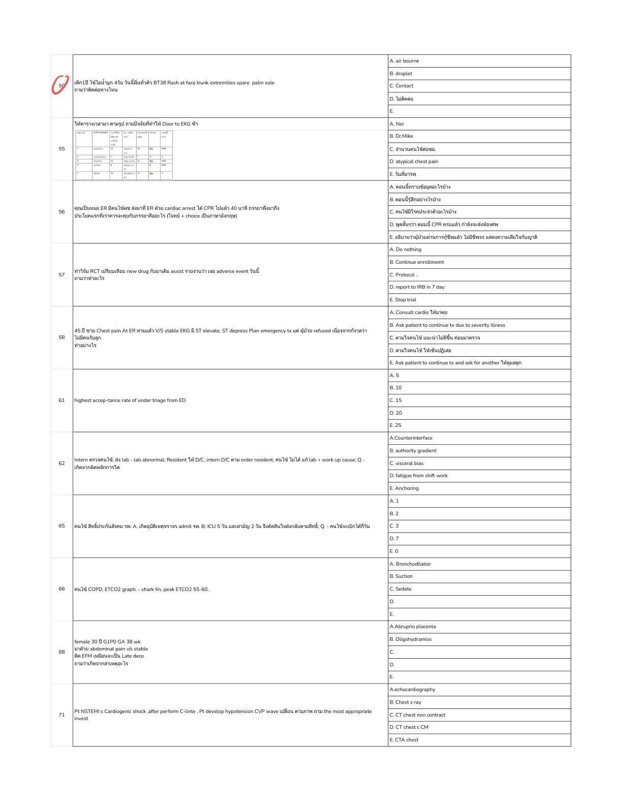
crop
ถูกต้อง
The door-to-EKG table/zoomed source crop shows the delayed Door-to-EKG times clustering with Noi more than the other listed factors. This identifies the operator/provider factor as the likely contributor to slow EKG acquisition.
The door-to-EKG table/zoomed source crop shows the delayed Door-to-EKG times clustering with Noi more than the other listed factors. This identifies the operator/provider factor as the likely contributor to slow EKG acquisition.
58. 45 ปี ชาย Chest pain At ER หายแล้ว V/S stable EKG มี ST elevate, ST depress Plan emergency tx แต่ ผู้ป่วย refused เนื่องจากกังวลว่าไม่มีคนรับลูก ทำอย่างไร
crop
ยังไม่ถูก
A. Consult cardio ให้มาคุย
ยังไม่ถูก
B. Ask patient to continue tx due to severity illness
ยังไม่ถูก
C. ตามใจคนไข้ แนะนำไม่ดีก็ต้องมาตรวจ
ยังไม่ถูก
D. ตามใจคนไข้ ให้เซ็นปฏิเสธ
ถูกต้อง
This is a high-risk STEMI/acute coronary syndrome scenario where refusal is driven by a fixable social barrier. The best response is to explain the severity, keep recommending emergency treatment, and actively solve the child-care barrier rather than simply accepting refusal.
E. Ask patient to continue tx and ask for another ให้ดูแลลูก
Rationale
This is a high-risk STEMI/acute coronary syndrome scenario where refusal is driven by a fixable social barrier. The best response is to explain the severity, keep recommending emergency treatment, and actively solve the child-care barrier rather than simply accepting refusal.
71. Pt NSTEMI c Cardiogenic shock, after perform C-linte, Pt develop hypotension CVP wave เปลี่ยน ตามภาพ ถาม the most appropriate invest
crop
ถูกต้อง
New hypotension after central line placement with a changed CVP waveform raises concern for an acute mechanical complication such as tamponade. Bedside echocardiography is the fastest useful investigation in an unstable patient.
New hypotension after central line placement with a changed CVP waveform raises concern for an acute mechanical complication such as tamponade. Bedside echocardiography is the fastest useful investigation in an unstable patient.
Severe vomiting followed by chest pain radiating to the back suggests esophageal rupture/Boerhaave syndrome. CT chest/neck with contrast evaluation is the most appropriate investigation among the listed choices.
134. ผู้ป่วยมาด้วยปวดท้องมาก ps 10/10 u/d AF ตรวจร่างกาย ท้อง soft not tender ถาม management
crop
ถูกต้อง
Atrial fibrillation plus severe abdominal pain out of proportion to a soft/nontender abdomen is classic for acute mesenteric ischemia. CT angiography is the key diagnostic test when available.
Atrial fibrillation plus severe abdominal pain out of proportion to a soft/nontender abdomen is classic for acute mesenteric ischemia. CT angiography is the key diagnostic test when available.
The police sent male 35 yr, who was ingest a portion of cocain pocket, he is agitate, T 37 PR 160/min, BP 160/100, physical exam shown abdomen soft, non tenderness, neuro E4V5M6, EKG as below, what appropriate management\nA. diltiazem\nB. amiodarone\nC. adenosine\nD. sodium bicarbonate\nE. synchronize cardioversion
Cocaine packet ingestion with agitation, marked tachycardia, and a concerning ECG can reflect sodium-channel blockade/wide-complex toxicity. Sodium bicarbonate is the appropriate treatment among the options; AV nodal blockers are not appropriate.
133. Poor control HT BP 182/110 HR 120 RR 30 ใจสั่น ปวดหัว ตรวจร่างกายปกติ Lab ดี EKG sinus tachycardia
crop
ยังไม่ถูก
A. Malignant hypertension
ถูกต้อง
Paroxysmal severe hypertension with headache, palpitations/tachycardia, and otherwise normal examination/labs fits catecholamine surges from pheochromocytoma better than uncomplicated essential or malignant hypertension.
Paroxysmal severe hypertension with headache, palpitations/tachycardia, and otherwise normal examination/labs fits catecholamine surges from pheochromocytoma better than uncomplicated essential or malignant hypertension.
The described lesion is warfarin-induced skin necrosis after recent warfarin initiation. Management is to stop warfarin and continue anticoagulation with heparin while reversing/protecting protein C activity as needed.
The described lesion is warfarin-induced skin necrosis after recent warfarin initiation. Management is to stop warfarin and continue anticoagulation with heparin while reversing/protecting protein C activity as needed.
72. ขณะที่กำลังส่งคนไข้จาก ERไปICU, คนไข้ใส่ internal pacemaker จาก Complete heart block, EGD develop จากaไปB (bradycardiaมากขึ้น), ไฟ แสดงสถานะsens และ pacing ยังติดอยู่ what is the most likely cause of this change?
crop
ยังไม่ถูก
A. Dislodgement of pacing wires
ยังไม่ถูก
B. Battery failure
ยังไม่ถูก
C. Inadequate sesn setting
ยังไม่ถูก
D. Inadequate rate setting
ถูกต้อง
The pacer is sensing and firing, but the patient becomes more bradycardic, which points to pacing without capture. Inadequate output is the listed cause that best explains failure to capture.
The pacer is sensing and firing, but the patient becomes more bradycardic, which points to pacing without capture. Inadequate output is the listed cause that best explains failure to capture.
For stable WPW-associated tachyarrhythmia, AV nodal blockers such as digoxin, diltiazem, metoprolol, and adenosine are unsafe if pre-excited AF is possible. Procainamide is usually preferred but is not listed; amiodarone is the best remaining option here.
For stable WPW-associated tachyarrhythmia, AV nodal blockers such as digoxin, diltiazem, metoprolol, and adenosine are unsafe if pre-excited AF is possible. Procainamide is usually preferred but is not listed; amiodarone is the best remaining option here.
16. ชายกิน herbal มา แล้ว HR 170 irregular BP drop ให้ IV แล้วยัง drop ถามกินอะไร ให้ภาพ ECG 12 leads มาให้
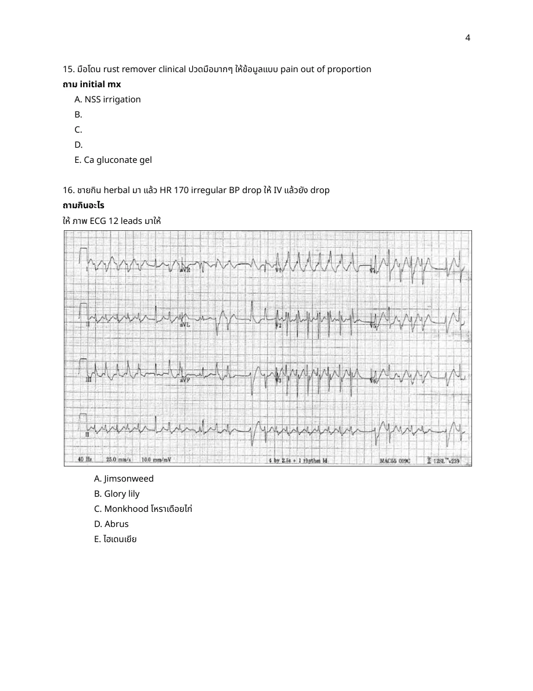
crop
ยังไม่ถูก
A. Jimsonweed
ยังไม่ถูก
B. Glory lily
ถูกต้อง
Aconite/monkshood poisoning causes hypotension and malignant irregular tachyarrhythmias after herbal ingestion. This matches the unstable irregular tachycardia scenario.
Aconite/monkshood poisoning causes hypotension and malignant irregular tachyarrhythmias after herbal ingestion. This matches the unstable irregular tachycardia scenario.
Pregnancy after electrical injury should receive fetal assessment when the fetus is viable, even if maternal ECG and symptoms are reassuring. NST is the best listed next step.
Pregnancy after electrical injury should receive fetal assessment when the fetus is viable, even if maternal ECG and symptoms are reassuring. NST is the best listed next step.
48. Female 68 yr old ud AF on warfarin. Present with 3 day melena. V/s PR 140 bpm, BP 80/50. Hct baseline 32% เหลือ 18% ถาม initial management\nA. Vit K oral\nB. FFP\nC. Vit K IV + FFP\nD. PCC\nE. VIT K oral + ...
Warfarin-associated life-threatening GI bleeding with shock requires rapid reversal. Four-factor PCC provides faster INR reversal than FFP and is the best initial reversal product among the choices.
68. Male 70 yr UD HT, AF on warfarin present with 45 mins PTA Lt hemiparesis Lt facial palsy INR 1.4 lab อื่น normal treatment
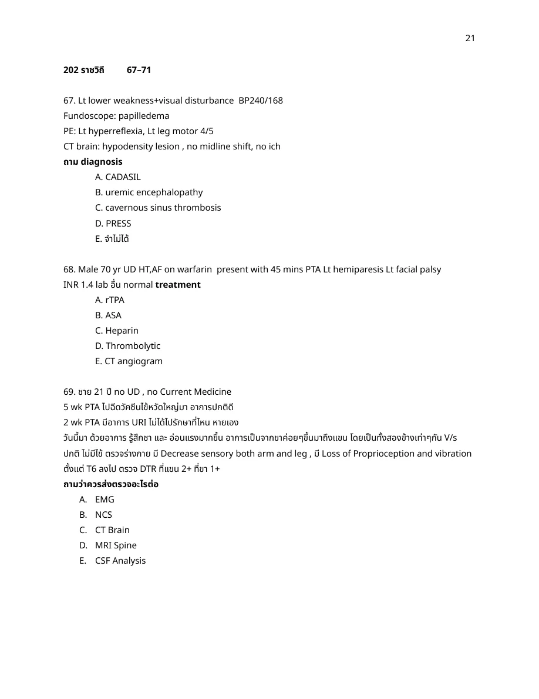
crop
ถูกต้อง
The patient presents within 45 minutes of acute ischemic stroke symptoms. Warfarin use is not an absolute contraindication when INR is 1.4, so IV alteplase/rTPA is appropriate after usual imaging exclusion of hemorrhage.
The patient presents within 45 minutes of acute ischemic stroke symptoms. Warfarin use is not an absolute contraindication when INR is 1.4, so IV alteplase/rTPA is appropriate after usual imaging exclusion of hemorrhage.
74. ชาย 82 ปี u/d dementia, HT อยู่ nursing home agitate, โวยวาย + ผลักเจ้าหน้าที่, ดึงสายน้ำเกลือมา 1 วัน v/s stable PE: WNL EKG: NSR. ถาม 1st line drug
crop
ยังไม่ถูก
A. Diazepam
ยังไม่ถูก
B. Lorazepam
ยังไม่ถูก
C. Midazolam
ถูกต้อง
For acute severe agitation in dementia with stable vital signs and NSR, haloperidol is a standard first-line emergency sedating antipsychotic option. Benzodiazepines can worsen delirium and respiratory risk.
For acute severe agitation in dementia with stable vital signs and NSR, haloperidol is a standard first-line emergency sedating antipsychotic option. Benzodiazepines can worsen delirium and respiratory risk.
81. Sudden chest pain radiate to back, BP สูง, BP แขนซ้ายน้อยกว่าแขนขวา, Echo เจอ flap ถาม management
crop
ถูกต้อง
Aortic dissection is suggested by tearing chest/back pain, pulse/BP differential, and an intimal flap. Initial medical management is rapid heart-rate and blood-pressure control with an IV beta blocker such as esmolol.
Aortic dissection is suggested by tearing chest/back pain, pulse/BP differential, and an intimal flap. Initial medical management is rapid heart-rate and blood-pressure control with an IV beta blocker such as esmolol.
123. Chest pain ร้าวไปไหล่ซ้าย EKG: LBBB Sgarbossa: concordant ST elevation at V4 and aVR
crop
ถูกต้อง
Chest pain with LBBB plus concordant ST elevation meeting Sgarbossa criteria should be treated as occlusion MI/STEMI equivalent and the cath/STEMI pathway should be activated.
Chest pain with LBBB plus concordant ST elevation meeting Sgarbossa criteria should be treated as occlusion MI/STEMI equivalent and the cath/STEMI pathway should be activated.
27. ชาย 30 ปี ใจสั่น ไม่มี sign unstable EKG: AF c WPW (ให้ EKG มา) ถาม Mx
crop
ยังไม่ถูก
A. amiodarone
ยังไม่ถูก
B. lidocaine
ยังไม่ถูก
C. synchronized cardioversion
ถูกต้อง
Stable AF with WPW should be treated with a drug that slows accessory pathway conduction; procainamide is preferred among the listed choices. AV nodal blockers can accelerate conduction down the accessory pathway.
Stable AF with WPW should be treated with a drug that slows accessory pathway conduction; procainamide is preferred among the listed choices. AV nodal blockers can accelerate conduction down the accessory pathway.
Female 63 y present with severe abdominal pain with diarrhea history heart fail + AF. She was shrimp allergy, current medication furosemide + digoxin. V/S: BT 37 PR 100 BP 140/90. Good conscious, abd - generalized tender with guarding, hypoactive bowel sound. Lab - cbc wbc 19000 (NE 78% LY 11%), Plt 200,000. Na 130, K 3, HCO3 18. ABG pH 7.27. Film abdomen - adynamic bowel ileus, no free air. What is most appropriate management?\nA. CT whole abdomen\nB. Emergency angiography\nC. U/S whole abdomen\nD. Barium enema
AF, severe abdominal pain, metabolic acidosis, leukocytosis, and ileus strongly suggest acute mesenteric ischemia. In the listed options, emergency angiography best matches urgent vascular diagnosis and possible intervention; shrimp allergy is not a true contraindication to iodinated contrast.
The child has SVT with hypotension, hypoxia, and respiratory distress, so this is unstable SVT. Synchronized cardioversion is indicated immediately, with sedation if it does not delay treatment.
The child has SVT with hypotension, hypoxia, and respiratory distress, so this is unstable SVT. Synchronized cardioversion is indicated immediately, with sedation if it does not delay treatment.
155. ชาย 60 ปีมา ER ด้วยเรื่องเจ็บอก ตรวจร่างกายปกติดี EKG - เส้นเลือดเส้นไหน
crop
ยังไม่ถูก
A. pericardium
ยังไม่ถูก
B. pulmonary a.
ยังไม่ถูก
C. RCA
ยังไม่ถูก
D. LCX
ถูกต้อง
The MI source crop has the LAD option marked, and anterior-wall ischemia/infarction pattern classically localizes to the left anterior descending artery.
The MI source crop has the LAD option marked, and anterior-wall ischemia/infarction pattern classically localizes to the left anterior descending artery.
Anterior STEMI with shock/hypotension should go for primary PCI when it can be achieved within the acceptable transfer window. The source crop note indicates PCI within about 100 minutes, favoring primary PCI over thrombolysis.
134. 10 yr boy เล่น syncope 30 min EKG, QT prolong syndrome ให้ management
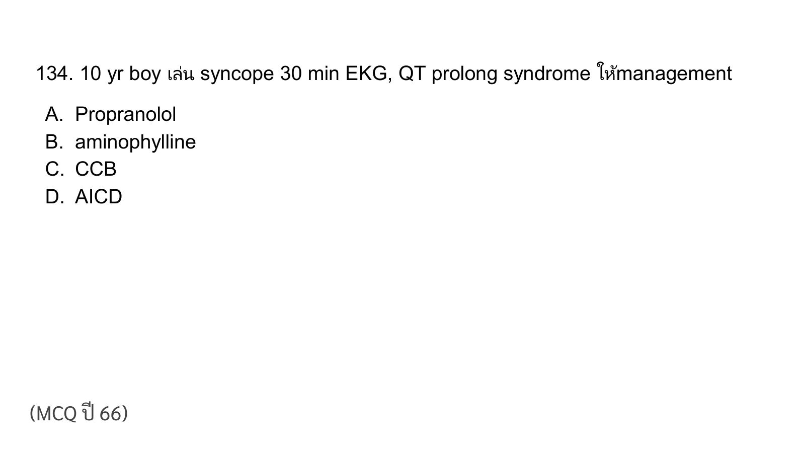
p15
ถูกต้อง
Syncope with prolonged QT syndrome is treated first-line with a nonselective beta blocker such as propranolol or nadolol. ICD is reserved for higher-risk/recurrent cases despite medical therapy or arrest.
Syncope with prolonged QT syndrome is treated first-line with a nonselective beta blocker such as propranolol or nadolol. ICD is reserved for higher-risk/recurrent cases despite medical therapy or arrest.
Exertional symptoms with systolic murmur in the HOCM physiology setting are caused by dynamic LV outflow tract obstruction, reducing stroke volume during stress/dehydration.
ยังไม่ถูก
B. decrease afterload due to excessive vasodilatation
ยังไม่ถูก
C. decrease cardiac output due to decrease LV systolic function
ยังไม่ถูก
D. increase preload due to increase peripheral arterial resistance
ยังไม่ถูก
E. decrease stroke volume due to accessory pathway induce arrhythmia
Exertional symptoms with systolic murmur in the HOCM physiology setting are caused by dynamic LV outflow tract obstruction, reducing stroke volume during stress/dehydration.
34. Boy 14 yr passed out while basketball 2 hr ago. Physical exam shown BT 37 C, BP 120/85 mmHg, RR 18/min, HR 70 bpm Heart: SEM gr. 2/6 between apex and left sternal border, Lung: no adventitious sound. He doesn't complain any symptom now. Most likely diagnosis?
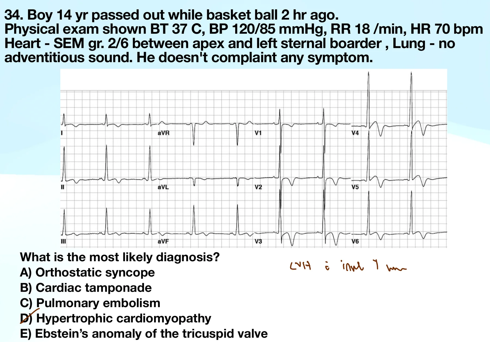
crop
ยังไม่ถูก
A. Orthostatic syncope
ยังไม่ถูก
B. Cardiac tamponade
ยังไม่ถูก
C. Pulmonary embolism
ถูกต้อง
Syncope during basketball with a systolic ejection murmur between the apex and left sternal border is classic for hypertrophic cardiomyopathy.
The presentation source image is most consistent with acute pericarditis/benign inflammatory chest pain management. NSAIDs are the appropriate initial treatment among the listed choices.
The presentation source image is most consistent with acute pericarditis/benign inflammatory chest pain management. NSAIDs are the appropriate initial treatment among the listed choices.
75. Male 57 years old, U/D heart disease + COPD, presented with palpitation 2 hr. Deny chest pain, dyspnea, orthopnea, leg edema. T36.6, HR 168, RR 22, BP 109/68 (จําไม่ได้เป้ะ แต่ไม่ drop). PE ~ lung clear. POCUS preserved LVEF, มีบรรยาย echo มาอีกแต่ปกติหมด no structural heart abnormality, lung A-profile both. EKG as following (จําไม่ได้เป้ะ ๆ แต่คิดว่าเป็น regular wide QRS) What is the next appropriate management?
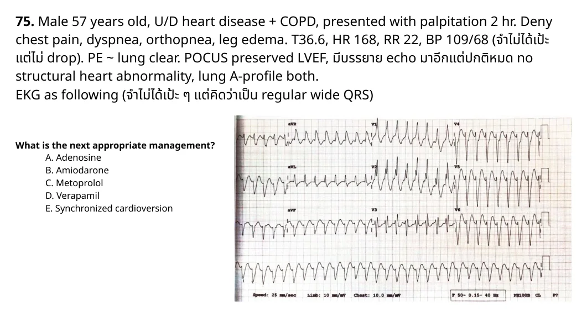
crop
ถูกต้อง
A stable regular wide-complex tachycardia with no structural heart abnormality can be managed with adenosine as a diagnostic and therapeutic step when SVT with aberrancy is possible. Cardioversion is reserved for instability.
A stable regular wide-complex tachycardia with no structural heart abnormality can be managed with adenosine as a diagnostic and therapeutic step when SVT with aberrancy is possible. Cardioversion is reserved for instability.
76. Male 30 years old, no U/D, presented with sharp, pleuritic chest pain, getting worse when lying supine and getting better when sitting upright. Deny Hx trauma, contact with other patients, recent travel. V/S T37.6, HR 110, BP140/100, RR 22, SpO2 98%. PE - HEENT - not pale conjunctiva, Lung - equal & clear both, Heart - no murmur, Leg - no edema. Troponin 0.1 (normal <0.04) EKG as following What is appropriate management?
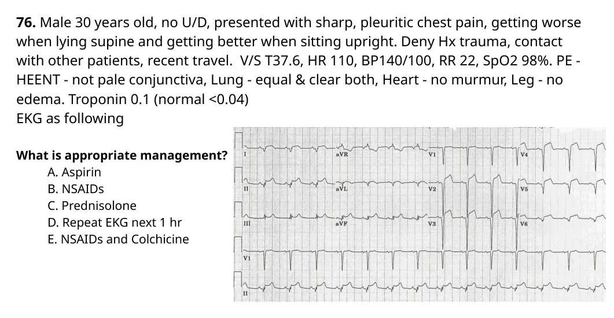
crop
ยังไม่ถูก
A. Aspirin
ยังไม่ถูก
B. NSAIDs
ยังไม่ถูก
C. Prednisolone
ยังไม่ถูก
D. Repeat EKG next 1 hr
ถูกต้อง
Sharp pleuritic chest pain worse supine and better sitting up with a compatible ECG is acute pericarditis. First-line therapy is NSAID plus colchicine unless contraindicated.
Sharp pleuritic chest pain worse supine and better sitting up with a compatible ECG is acute pericarditis. First-line therapy is NSAID plus colchicine unless contraindicated.
77. Female 25 years old. Denied U/D. Presented with syncope ตอนกําลังทํางาน, ไม่มี chest pain หรือ familial hx ก่อนหน้า มาอีอา ตื่นดี V/S ดี ตรวจร่างกาย เจอ crescendo-decrescendo อะไร สักอย่าง EKG as following What is the most likely diagnosis?
crop
ยังไม่ถูก
A. ARVD
ถูกต้อง
Syncope with a crescendo-decrescendo systolic murmur in a young patient is most consistent with hypertrophic obstructive cardiomyopathy.
78. Thai female presented with visual field defect (right homonymous hemianopia), BP shoot 200/100 Which anti hypertensive is the drug of choice ?
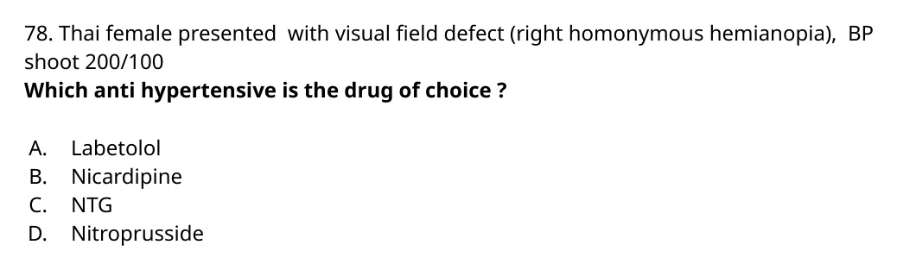
crop
ยังไม่ถูก
A. Labetolol
ถูกต้อง
Acute neurologic deficit with severe hypertension requires a titratable IV antihypertensive. Nicardipine is commonly preferred for hypertensive emergency/stroke BP control.
Acute neurologic deficit with severe hypertension requires a titratable IV antihypertensive. Nicardipine is commonly preferred for hypertensive emergency/stroke BP control.
79. Pt ชายอายุประมาณ 30ปี present ด้วย chest discomfort and palpitation v/s ดี BP ไม่drop, lung clear, Cap refill < 2 sec ให้ EKG เป็น AF with WPW ถาม management
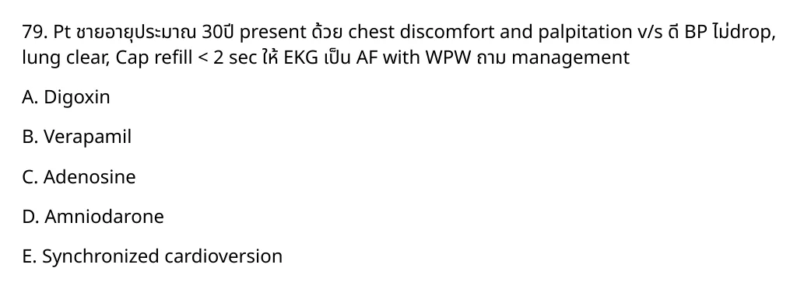
crop
ยังไม่ถูก
A. Digoxin
ยังไม่ถูก
B. Verapamil
ยังไม่ถูก
C. Adenosine
ถูกต้อง
Stable AF with WPW should avoid AV nodal blockers such as digoxin, verapamil, and adenosine. With procainamide absent from the options, amiodarone is the best listed choice.
Stable AF with WPW should avoid AV nodal blockers such as digoxin, verapamil, and adenosine. With procainamide absent from the options, amiodarone is the best listed choice.
80. ชายอายุประมาณ 60 ปีกําลัง clambing มีอาการchest pain sudden dypnea, BP drop HRเร็ว ~120 มี jugular venous engorge heartมี murmur ตรง LUPSB, what is the most appropriate investigation for diagnosis in ED
crop
ถูกต้อง
Sudden dyspnea/chest pain with hypotension, JVD, and murmur suggests an unstable obstructive or mechanical cardiac diagnosis. Bedside transthoracic echo is the fastest ED diagnostic test among the options.
Sudden dyspnea/chest pain with hypotension, JVD, and murmur suggests an unstable obstructive or mechanical cardiac diagnosis. Bedside transthoracic echo is the fastest ED diagnostic test among the options.
121.SSS on pace รู้สึก syncope ไป 10min มาที่ ER BP120/80 HR 40 sat 100 EKG strip A: Oversensing B: Undersensing (Failure to sense) C: Failure to capture
The source crop labels the rhythm as failure to pace from oversensing. Oversensing suppresses pacer output, causing bradycardia/syncope despite an implanted pacemaker.
Fever/cough followed by shock, pulmonary edema after intubation, and EF 15% suggests cardiogenic shock from severe myocarditis or acute cardiomyopathy. Dobutamine is the listed inotrope that directly supports low cardiac output.
A 3-month-old with poor feeding, failure to thrive, tachypnea, crackles, hepatomegaly, harsh holosystolic murmur at the left lower sternal border, and biventricular enlargement fits a significant ventricular septal defect.
A 3-month-old with poor feeding, failure to thrive, tachypnea, crackles, hepatomegaly, harsh holosystolic murmur at the left lower sternal border, and biventricular enlargement fits a significant ventricular septal defect.
45 ปี ชาย เจ็บหน้าอก อาเจียนมาก กลืนอะไรไม่ได้เพราะกลืนแล้วจะเจ็บหมด V/S stable บอกว่า EKG early repolarization (ให้ film ดูเอง) มี subcu emphysema ที่คอเต็มไปหมด แล้วก็มี pleural eff ด้านซ้าย ถาม investigation for dx
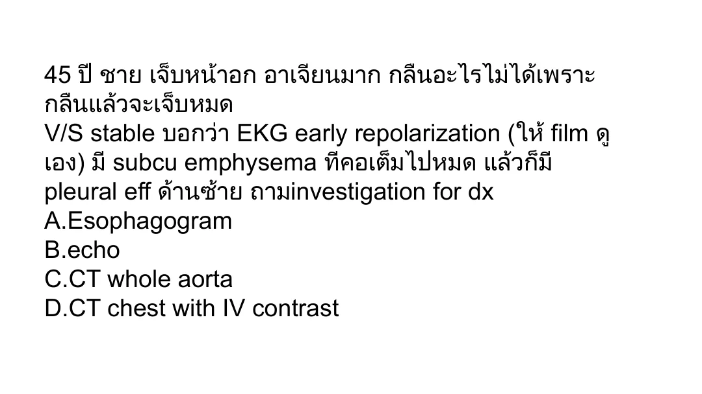
crop
ยังไม่ถูก
A. Esophagogram
ยังไม่ถูก
B. echo
ยังไม่ถูก
C. CT whole aorta
ถูกต้อง
Chest pain after vomiting with dysphagia, neck subcutaneous emphysema, and left pleural effusion suggests esophageal rupture; CT chest is the best broad ED diagnostic study among the listed choices.
Chest pain after vomiting with dysphagia, neck subcutaneous emphysema, and left pleural effusion suggests esophageal rupture; CT chest is the best broad ED diagnostic study among the listed choices.
A02-0043A02-Q0043solution_ready
Female 63 y present with severe abdominal pain with diarrhea history heart fail + AF. She was shrimp allergy, current medication furosemide + digoxin. V/S: BT 37 PR 100 BP 140/90. Good conscious, abd - generalized tender with guarding, hypoactive bowel sound. Lab -cbc wbc 19000 (NE 78% LY 11%), Plt 200,000. Na 130, k 3 hco3 18. ABG pH 7.27. Film abdomen - adynamic bowel ileus, no free air. What is most appropriate management?
crop
ยังไม่ถูก
A. CT whole abdomen
ถูกต้อง
AF, severe pain, metabolic acidosis, ileus, and guarding suggest acute mesenteric ischemia. If peritonitis/advanced ischemia is emphasized, urgent intervention is needed; if stable diagnosis is emphasized, CTA would be first.
AF, severe pain, metabolic acidosis, ileus, and guarding suggest acute mesenteric ischemia. If peritonitis/advanced ischemia is emphasized, urgent intervention is needed; if stable diagnosis is emphasized, CTA would be first.
A02-0044A02-Q0044solution_ready
36. หญิง 60 ปี U/D AF on warfarin มาด้วย severe abdominal pain PE: Heart: irregular rhythm Abd: soft, not tender, no guarding EKG: AF rate 110 bpm
crop
ยังไม่ถูก
A.
ถูกต้อง
AF with severe abdominal pain out of proportion to a soft abdomen is classic acute mesenteric ischemia.
AF with severe abdominal pain out of proportion to a soft abdomen is classic acute mesenteric ischemia.
A02-0045A02-Q0045solution_ready
82. เด็ก 3 ปี แม่พามา วันนี้ irritable, lethargic especially during feeding BT 37.2 RR4 BP70/50 HR240 PE: ปกติหมด neuro active ดี. ได้ให้ IV NSS แล้ว EKG: SVT rate 240 ถาม Mx
crop
ยังไม่ถูก
A. NSS
ยังไม่ถูก
B. Carotid massage
ยังไม่ถูก
C. Adenosine
ถูกต้อง
SVT at 240 with lethargy, severe bradypnea/respiratory failure, and hypotension (70/50) is unstable. Unstable pediatric tachyarrhythmia requires synchronized cardioversion. Adenosine is for stable regular narrow-complex SVT or can be considered only if it does not delay cardioversion.
SVT at 240 with lethargy, severe bradypnea/respiratory failure, and hypotension (70/50) is unstable. Unstable pediatric tachyarrhythmia requires synchronized cardioversion. Adenosine is for stable regular narrow-complex SVT or can be considered only if it does not delay cardioversion.
References
- RCH Clinical Practice Guideline, SVT: unstable child with shock/altered conscious state needs synchronized cardioversion. https://www.rch.org.au/clinicalguide/guideline_index/Supraventricular_Tachycardia_SVT/
A02-0046A02-Q0046solution_ready
A 60-year-old woman was brought into the ED by her family who stated that she had been weak, lethargic, and saying "crazy things" over the last 2 days. Her family also stated that her medical history was significant only for a disease of her thyroid. Vital signs: BT 34 C, HR 51/min, RR 12/min, BP 120/90 mmHg. On examination, the patient was overweight, her skin was dry, and you noticed periorbital edema. On neurologic examination, the patient did not respond to stimulation. Which of the following is the most likely diagnosis?
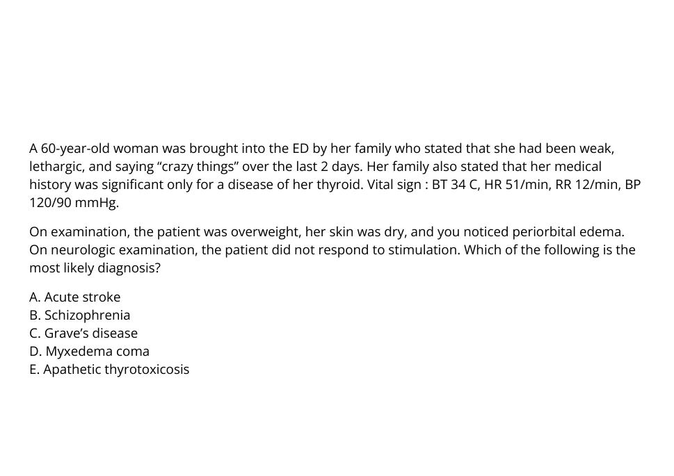
crop
ยังไม่ถูก
A. Acute stroke
ยังไม่ถูก
B. Schizophrenia
ยังไม่ถูก
C. Grave's disease
ถูกต้อง
Hypothermia, bradycardia, dry skin, periorbital edema and coma in thyroid disease are classic myxedema coma.
A 45-year-old female was found unconscious and brought to the ED by her family. Physical examination revealed BT 35.5 C, BP 71/48 mmHg, HR 59/min, RR 18/min. Her face and extremities were edematous and non-pitting edema. Her skin was dry, cool, slightly mottled and desquamated but no evidence of petechiae or purpura. Her pupils were 3 mm and sluggish both eyes. She also shown decerebrated gestures in response to external painful stimuli and her Babinski's sign was plantar flexed at both feet. DTX 104 mg% and ECG 12 leads were sinus bradycardia. She was intubated and an inotropic agent was infused after did not respond to fluid therapy. Her CT brain appeared normal.
Which of the following is the most useful further investigation?
crop
ยังไม่ถูก
A. MRI brain
ยังไม่ถูก
B. Serum cortisol
ยังไม่ถูก
C. C3, C4 complements
ยังไม่ถูก
D. Anti-nuclear antibody
ถูกต้อง
The presentation is most suspicious for myxedema coma; thyroid function testing is the most useful confirmatory investigation.
A 45-year-old man presented to emergency department compliant of sudden palpitation. He stated that he had headache that not persisted more than an hour, but sporadic and often accompanied by sudden whole body sweating and palpitation without chest pain. He had abdominal and back pain. His body temperature was 36.8 C and his blood pressure was 190/120 mmHg, pulse rate was 112/minute with regular rate, respiratory rate was 24/minutes without respiratory distress, and oxygen saturation was 98% on room air. ECG 12-leads shown sinus tachcardia with no ST-T change. Other physical examination was unremarkable with the exception of moist palms, mild tender at abdomen and back.
Which test is the most likely to confirm diagnosis
crop
ถูกต้อง
Plasma/serum metanephrines are the preferred biochemical test for pheochromocytoma.
A 39-year-old woman was brought into the emergency department by her family who stated that she had 4 days of diarrhea and now started acting "crazy" with mood swings and confusion. The family stated that she usually took a medication for a problem with her neck. Vital sign: BT 38.6 C, RR 22/min, HR 140/min, BP 130/45 mmHg. Physical examination showed confuse, heart - irregular tachycardia, normal S1S2, no murmur; lung - clear; ECG revealed atrial fibrillation with a normal QRS complex.
After you address the airway, breathing and circulation (ABCs). Which of the following is the most appropriate next step in management?
crop
ยังไม่ถูก
A. Ceftriaxone
ยังไม่ถูก
B. Ciprofloxacin
ถูกต้อง
Thyroid storm after ABCs needs thionamide therapy; PTU is preferred in storm because it blocks synthesis and peripheral conversion.
A Thai male 30 year old with asthma, presents with palpitation for 2 hours. Vital sign: BT 39 C HR 160 irregular BP 150/100 mmHg RR 24 O2sat 90% RA. He has agitation and confusion. On physical examination reveal exophthalmos, thyroid gland enlargement, fine crepitation of both lungs, and pitting edema of both legs. EKG shows atrial fibrillation rate 160 bpm. Laboratory results show: TSH 0.02 uIU/ml (0.27-4.2), FT3 8.9 pg/ml (2.02-4.43), FT4 9.8 ng/dL (0.93-1.71). Which is the most appropriate management?
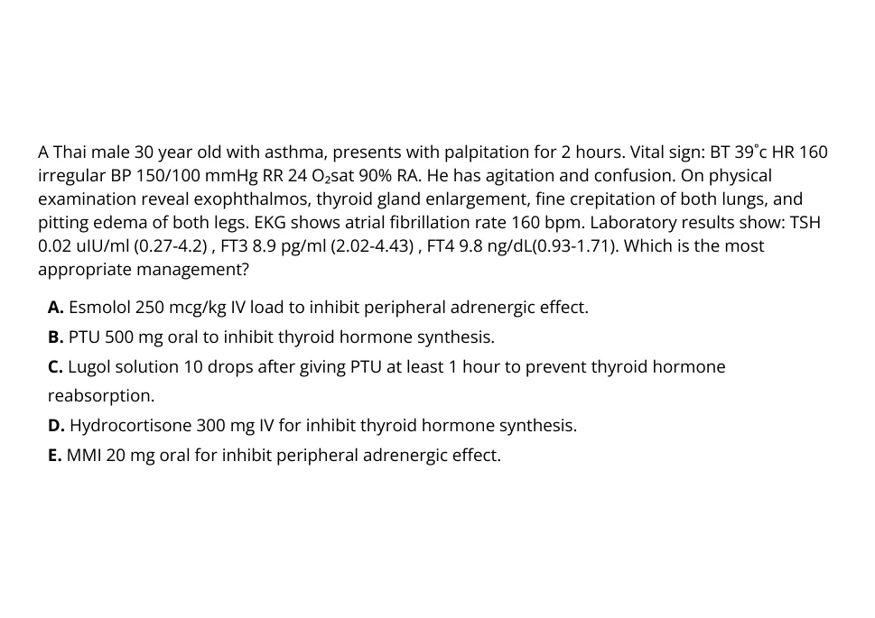
crop
ยังไม่ถูก
A. Esmolol 250 mcg/kg IV load to inhibit peripheral adrenergic effect.
ถูกต้อง
In thyroid storm with asthma/pulmonary congestion, beta blockade is risky; PTU is the best listed core therapy.
ยังไม่ถูก
C. Lugol solution 10 drops after giving PTU at least 1 hour to prevent thyroid hormone reabsorption.
ยังไม่ถูก
D. Hydrocortisone 300 mg IV for inhibit thyroid hormone synthesis.
ยังไม่ถูก
E. MMI 20 mg oral for inhibit peripheral adrenergic effect.
Even though the mother is clinically well with a normal ECG after low-voltage household shock, pregnancy adds fetal risk. With fetal movement present and no maternal instability, the next step among the options is fetal monitoring with NST rather than discharge, urgent ultrasound, or routine troponin/CPK.
Even though the mother is clinically well with a normal ECG after low-voltage household shock, pregnancy adds fetal risk. With fetal movement present and no maternal instability, the next step among the options is fetal monitoring with NST rather than discharge, urgent ultrasound, or routine troponin/CPK.
References
- Electrical injury reviews recommend fetal assessment/monitoring after maternal electrical shock when pregnancy is viable, even if maternal findings are reassuring. https://www.ncbi.nlm.nih.gov/books/NBK448087/
MCQ 2563 by EP15 Rajavithi.pdf, source page image p.18
ถูกต้อง
The combination of depressed mental status, bradycardia, hypothermia, generalized edema, and delayed deep tendon reflex relaxation is classic severe hypothyroidism/myxedema coma.
Source: Old special HTML: A04 | Page/slot: old-special | Marker: a04-miscellaneous-q2
Reference: Source: Old special HTML: A04 | Page/slot: old-special | Marker: a04-miscellaneous-q2
ซ่อนเฉลยเปิดเฉลยSolution readyA02-0052 answer
Answer
A. myxedema crisis
Rationale
The combination of depressed mental status, bradycardia, hypothermia, generalized edema, and delayed deep tendon reflex relaxation is classic severe hypothyroidism/myxedema coma.
References
- Source note: Source-limited item: original page lists a diagnosis prompt with one visible choice only. - Original reference: Reference: Source: MCQ 2563 by EP15 Rajavithi.pdf | p.1-34
Myxedema coma requires intravenous thyroid hormone replacement. IV levothyroxine is the standard initial thyroid hormone therapy, with supportive care and stress-dose steroid coverage as clinically indicated.
ยังไม่ถูก
C. IV T3
ยังไม่ถูก
D. IV ATB
ยังไม่ถูก
E. fluid resuscitation
Source: Old special HTML: A04 | Page/slot: old-special | Marker: a04-thyroid-and-adrenal-q2
Reference: Source: Old special HTML: A04 | Page/slot: old-special | Marker: a04-thyroid-and-adrenal-q2
ซ่อนเฉลยเปิดเฉลยSolution readyA02-0053 answer
Answer
B. IV T4
Rationale
Myxedema coma requires intravenous thyroid hormone replacement. IV levothyroxine is the standard initial thyroid hormone therapy, with supportive care and stress-dose steroid coverage as clinically indicated.
Q6. คนแก่ ซึม hypotension, hypothermia, bradycardia, edema 2+. ให้ IV fluid + inotrope แล้ว BP ยัง drop. Next management?
MCQ 2563 by EP15 Rajavithi.pdf, source page image p.18
ยังไม่ถูก
A. Thyroxine
ยังไม่ถูก
B. Norepinephrine
ยังไม่ถูก
C. IV NSS
ถูกต้อง
In suspected myxedema crisis with persistent shock, stress-dose hydrocortisone should be given because concomitant adrenal insufficiency can coexist and thyroid hormone can precipitate adrenal crisis if steroid coverage is missed.
Source: Old special HTML: A04 | Page/slot: old-special | Marker: a04-thyroid-and-adrenal-q6
Reference: Source: Old special HTML: A04 | Page/slot: old-special | Marker: a04-thyroid-and-adrenal-q6
ซ่อนเฉลยเปิดเฉลยSolution readyA02-0054 answer
Answer
D. Hydrocortisone
Rationale
In suspected myxedema crisis with persistent shock, stress-dose hydrocortisone should be given because concomitant adrenal insufficiency can coexist and thyroid hormone can precipitate adrenal crisis if steroid coverage is missed.
References
- Source note: Extra A04 endocrine source item recovered from EP15 page 18. - Original reference: Reference: Source: MCQ 2563 by EP15 Rajavithi.pdf | p.18
A02-0055A02-Q0055solution_ready
118. ผู้ป่วยชายอายุ 32 ปี มาห้องฉุกเฉินด้วยอาการคอบวม มีประวัติมีไข้ 3 วันก่อนมาไม่ผ่าตัดฝีหนองที่ข้างขวา หลังผ่าตัดเสร็จว่าคางซ้ายบวม เจ็บ กลืนลำบาก อ้าปากไม่สุด มีไข้สูง ตรวจร่างกายพบ BT 39 C, HR 90/min, BP 140/90 mmHg, RR 25/min, O2 sat room air 96%. HEENT: edema of entire upper neck and left chin, floor of mouth swelling, cannot see tonsil and uvular due to elevate tongue. Lung: no stridor or wheezing, dyspnia.
Ludwig angina/deep neck infection with floor-of-mouth swelling and trismus is best managed with awake fiberoptic airway control.
A02-0056A02-Q0056solution_ready
135. Girl 4 yr, history of pharyngitis 2 days. She presented with drooling for 1 day, she has neck swelling, fever, trismus, odynophagia, PE: BT 39 C, BP 140/80 mmHg, RR 18/min, PR 112 bpm HEENT shown hyperextend, stiffness, torticollis, injected pharynx, swelling posterior oropharynx. Lung clear. What is the most likely diagnosis?
A) Diphtheria B) Ludwig angina C) Bacterial tracheitis D) Peritonsillar abscess E) Retropharyngeal abscess
Drooling, fever, trismus, neck stiffness/torticollis, and posterior oropharyngeal swelling fit retropharyngeal abscess.
A02-0057A02-Q0057solution_ready
33. A 70-year-old woman with type 2 DM, HT, AF presents with acute painless visual loss in her left eye for 10 minutes. Her visual acuity is markedly decrease and she has a striking afferent pupillary defect. She also has a left-sided carotid bruit.
Which of the following is the most approximate next step in management?
crop
ยังไม่ถูก
A. Lateral canthotomy
ถูกต้อง
Acute CRAO/amaurosis presentation within minutes can receive immediate ocular massage while urgent stroke/ophthalmology care proceeds.
The reviewed capnogram shows a tombstone-style waveform, and the source annotation identifies heart failure/CHF.
A02-0060A02-Q0060solution_ready
50ปี ชาย CHF, AF มาด้วย ซึมหอบเหนื่อย ใส่ NG แล้วมีเลือดออก. On ASA, Plavix, Apixaban. ให้ยาอะไรนอกจาก fluid
crop
ยังไม่ถูก
A. protamine sulfate
ยังไม่ถูก
B. iduruzisumab
ยังไม่ถูก
C. vit K
ยังไม่ถูก
D. FFP
ถูกต้อง
The patient is bleeding while taking aspirin plus clopidogrel plus apixaban. Among the listed choices there is no specific factor Xa reversal agent or PCC option. Protamine reverses heparin, idarucizumab reverses dabigatran, vitamin K/FFP reverse warfarin-related coagulopathy. The only option that addresses the dual antiplatelet effect in the provided answer set is platelet concentrate.
The patient is bleeding while taking aspirin plus clopidogrel plus apixaban. Among the listed choices there is no specific factor Xa reversal agent or PCC option. Protamine reverses heparin, idarucizumab reverses dabigatran, vitamin K/FFP reverse warfarin-related coagulopathy. The only option that addresses the dual antiplatelet effect in the provided answer set is platelet concentrate.
References
- Source crop: `source_pdf_inventory/page_images/exam-r2-hemato-66/page_0002.png`. - ACC Expert Consensus on anticoagulant-related bleeding: idarucizumab is for dabigatran; andexanet/PCC are used for factor Xa inhibitor reversal when indicated. https://www.jacc.org/doi/10.1016/j.jacc.2020.04.053
A02-0061A02-Q0061solution_ready
48. Female 68 yr old ud AF on warfarin. Present with 3 day melena. V/s PR 140 bpm, BP 80/50. Hct baseline 32% เหลือ 18% ถาม initial management
crop
ยังไม่ถูก
A. Vit K oral
ยังไม่ถูก
B. FFP
ยังไม่ถูก
C. Vit K IV + FFP
ถูกต้อง
This is life-threatening warfarin-associated GI bleeding: shock, tachycardia, and major hematocrit drop. The fastest reversal option listed is prothrombin complex concentrate (PCC); vitamin K is also required clinically, but among the choices only PCC gives rapid factor replacement.
This is life-threatening warfarin-associated GI bleeding: shock, tachycardia, and major hematocrit drop. The fastest reversal option listed is prothrombin complex concentrate (PCC); vitamin K is also required clinically, but among the choices only PCC gives rapid factor replacement.
References
- Source crop: `source_pdf_inventory/question_crops/mcq-2025-รวมไม่แยกหัวข้อ/mcq_2025_combined_page_0036_q035.png`. - ACC Expert Consensus on anticoagulant-related bleeding: use 4-factor PCC for major VKA-associated bleeding, with vitamin K. https://www.jacc.org/doi/10.1016/j.jacc.2020.04.053
A02-0062A02-Q0062solution_ready
49. อายุ 33 ปี blunt ab FAST pos + BP drop HR เร็ว > CT เป็น splenic tear gr.3 c hemoperitoneum ไม่ผ่า พิจารณาให้ MTP เป็น PRC 4u + FFP 4u + Plt 1 u หลังให้เลือดไป 6 ชม แล้ว BT 38.6 HR 130 BP 100/60 RR32 sat 88 lung crep BLL, no edema, no JVC distension, CXR: bilat lower lung inf ถาม Mx
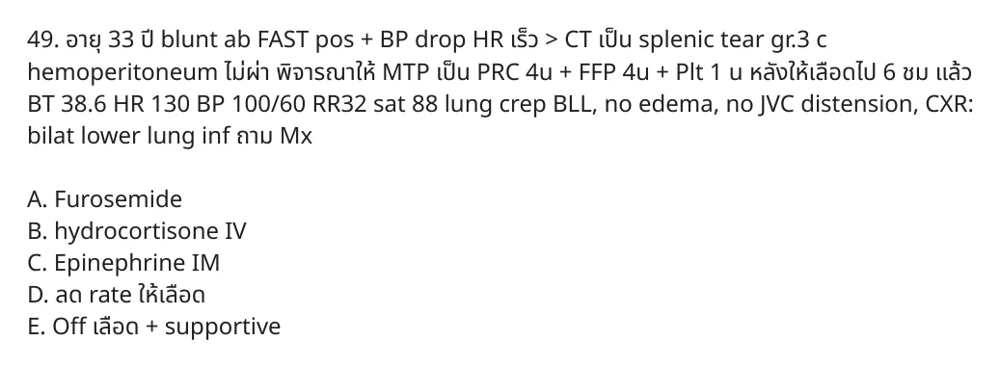
crop
ยังไม่ถูก
A. Furosemide
ยังไม่ถูก
B. hydrocortisone IV
ยังไม่ถูก
C. Epinephrine IM
ยังไม่ถูก
D. ลด rate ให้เลือด
ถูกต้อง
Fever, hypoxemia, bilateral infiltrates, no JVD/edema, and onset within 6 hours after transfusion is TRALI. Management is to stop transfusion and provide supportive respiratory/hemodynamic care; diuretics are for volume overload/TACO, not TRALI.
Fever, hypoxemia, bilateral infiltrates, no JVD/edema, and onset within 6 hours after transfusion is TRALI. Management is to stop transfusion and provide supportive respiratory/hemodynamic care; diuretics are for volume overload/TACO, not TRALI.
97. ผู้ป่วยหญิง G2P1 GA 34 wk มาด้วยปวดท้อง มีเลือดออกทางช่องคลอด ตรวจร่างกาย V/S BP 90/60 HR tachycardia Abd: gravid, hypertonicity contraction, can't palpate fetal part จากนั้น monitor EFM: FHR 90 bpm, late deceleration ถาม immediate mx
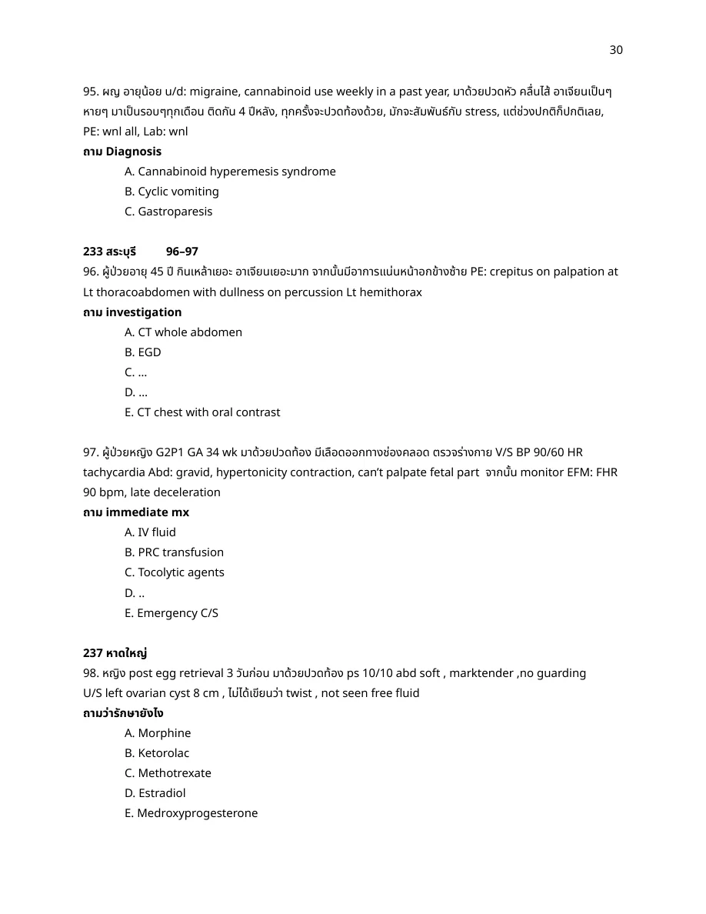
crop
ยังไม่ถูก
A. IV fluid
ยังไม่ถูก
B. PRC transfusion
ถูกต้อง
Painful vaginal bleeding, hypertonic uterus, maternal hypotension/tachycardia, and fetal bradycardia/late decelerations indicate severe placental abruption with fetal distress. Immediate resuscitation is needed, but the best listed definitive emergency management is cesarean delivery.
ยังไม่ถูก
D. ..
ถูกต้อง
Painful vaginal bleeding, hypertonic uterus, maternal hypotension/tachycardia, and fetal bradycardia/late decelerations indicate severe placental abruption with fetal distress. Immediate resuscitation is needed, but the best listed definitive emergency management is cesarean delivery.
Painful vaginal bleeding, hypertonic uterus, maternal hypotension/tachycardia, and fetal bradycardia/late decelerations indicate severe placental abruption with fetal distress. Immediate resuscitation is needed, but the best listed definitive emergency management is cesarean delivery.
A 60-year-old man, DM, HT coronary artery disease, presented with severe abdominal pain for 3 hours. He denied fever, nausea or vomiting. Physical examination revealed T 37 C, PR 100/min, BP 120/80 mmHg, RR 20/min, generalized mild tenderness, no guarding or rigidity, hypoactive bowel sound, other within normal limits. Laboratory shown CBC Hb 12 mg/dl, Hct 36%, WBC 12,000/mm3 (N 80%, L20%), platelet 150,000, BUN 28 mg/dl, Cr 1.4 mg/dl, Na 136 mEq/L, K 5.9 mEq/L, Cl 98 mEq/L, HCO3 10 mEq/L, POCT glucose 200 mg/dl. What is the most appropriate investigation? A. Blood lactate B. MRI abdomen C. CTA abdomen D. Plain film abdomen E. Ultrasound abdomen
Suspected acute mesenteric ischemia is best investigated with CT angiography when stable enough.
A02-0066A02-Q0066solution_ready
Q5. Male 59 yr with underlying AF and thyroid disease. 30 min PTA syncope; complains of weakness and DOE for several weeks. V/S stable, moderate pale conjunctiva, no hepatosplenomegaly, neuro: unstable gait. Lab: Hb 7, Hct 21, WBC 1,600, platelet 80,000. PBS shown. Diagnosis?
MCQ 2024 source page p.16, question 200
ยังไม่ถูก
A. Acute leukemia
ยังไม่ถูก
B. Aplastic anemia
ยังไม่ถูก
C. Folate deficiency
ถูกต้อง
Pancytopenia with severe anemia plus gait instability/neurologic findings points to megaloblastic anemia from vitamin B12 deficiency rather than isolated folate deficiency or aplastic anemia.
ยังไม่ถูก
E. Drug induced hemolytic anemia
Source: Old special HTML: A04 | Page/slot: old-special | Marker: a04-nutrition-vitamins-metabolic-q5
Reference: Source: Old special HTML: A04 | Page/slot: old-special | Marker: a04-nutrition-vitamins-metabolic-q5
ซ่อนเฉลยเปิดเฉลยSolution readyA02-0066 answer
Answer
D. Vitamin B12 deficiency
Rationale
Pancytopenia with severe anemia plus gait instability/neurologic findings points to megaloblastic anemia from vitamin B12 deficiency rather than isolated folate deficiency or aplastic anemia.
Warfarin-induced skin necrosis soon after starting warfarin is managed by stopping warfarin and maintaining anticoagulation with heparin while reversing/protecting protein C activity as needed.
ยังไม่ถูก
B. enoxaparin
ยังไม่ถูก
C. idarucizumab
ยังไม่ถูก
D. methyl prednisolone
ยังไม่ถูก
E. IVIG
Source: Old special HTML: A16 | Page/slot: old-special | Marker: a16-medication-and-antidote-q19
Reference: Source: Old special HTML: A16 | Page/slot: old-special | Marker: a16-medication-and-antidote-q19
ซ่อนเฉลยเปิดเฉลยSolution readyA02-0067 answer
Answer
A. heparin
Rationale
Warfarin-induced skin necrosis soon after starting warfarin is managed by stopping warfarin and maintaining anticoagulation with heparin while reversing/protecting protein C activity as needed.
References
- Source note: Source image preserved from MCQ-202024.pdf.pdf p.18. No answer/lesson in this collection pass. - Original reference: Reference: Source: MCQ-202024.pdf.pdf | p.18 | full source page rendered; answer intentionally not imported.
A02-0068A02-Q0068solution_ready
121. เด็กถูกผึ้งต่อยมา เหนื่อย เขียว sat drop 85 bp drop hr ช้า lung wheeze: anaphylaxis ให้ o2 กับ adrenaline im แล้ว แต่ยังมีเขียว cyanosis sat drop 88 EKG hr ช้า ทำไรต่อ
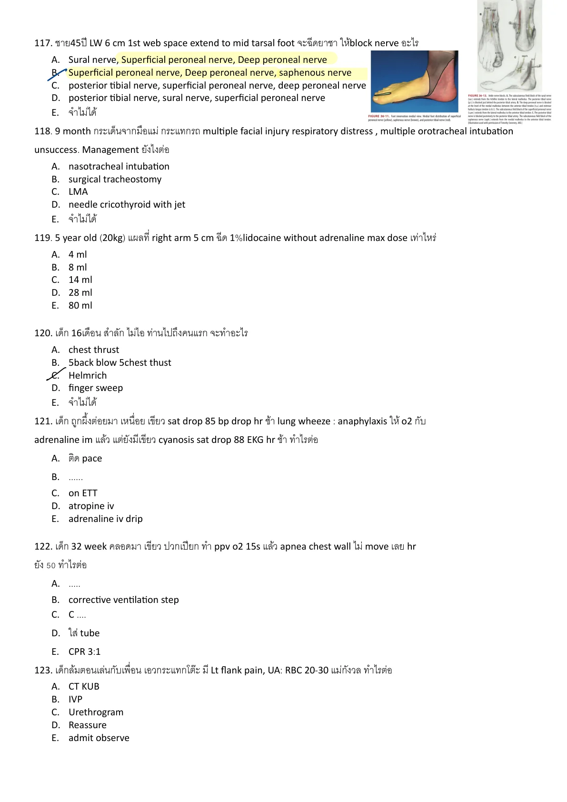
crop
ยังไม่ถูก
A. ติด pace
ยังไม่ถูก
B. ......
ถูกต้อง
Persistent cyanosis with bradycardia despite IM epinephrine and oxygen indicates impending respiratory failure requiring airway control.
25. ชาย 65 ปี HT DLP AF He usually missing occasional dose of warfarin present with sudden visual loss right eye RAPD +ve fundoscopy: cherry red spot with pale eyeground, CT brain not seen ICH or infarct
crop
ยังไม่ถูก
A. ASA
ยังไม่ถูก
B. Eye rubbing
ถูกต้อง
CRAO with sudden monocular vision loss and embolic risk is an ocular stroke; with CT excluding hemorrhage, thrombolysis is the intended acute stroke-type option.
CRAO with sudden monocular vision loss and embolic risk is an ocular stroke; with CT excluding hemorrhage, thrombolysis is the intended acute stroke-type option.
77. Female 25 years old. Denied U/D. Presented with syncope ตอนกำลังทำงาน, ไม่มี chest pain หรือ familial hx ก่อนหน้า มาอีอา ตื่นดี V/S ดี ตรวจร่างกาย เจอ crescendo-decrescendo อะไรสักอย่าง EKG as following What is the most likely diagnosis?
crop
ยังไม่ถูก
A. ARVD
ถูกต้อง
Syncope with a crescendo-decrescendo systolic murmur in a young patient is most consistent with hypertrophic cardiomyopathy.
135. งานวิ่งกีฬา ญ 40ปี หมดสติ เพื่อนบอกหมดสติไปหลายนาที พอเรียกได้สติ คนไข้ปลุกตื่นได้แต่ไม่ตอบ ไม่ยอมขยับซีกขวา PE: cvs no murmur, neuro no neurodeficit,e4v5m6,no stiff neck ถามmost appropiate next management?
crop
ยังไม่ถูก
A. ส่งโรงพยาบาล
ยังไม่ถูก
B. IV diazepam
ถูกต้อง
Collapse during a running event requires cardiac syncope screening. She is not actively seizing and neuro exam is normal, so 12-lead ECG is the best listed next step.
Collapse during a running event requires cardiac syncope screening. She is not actively seizing and neuro exam is normal, so 12-lead ECG is the best listed next step.
Female 32 y, postpartum 2wk, Grave's disease มาด้วย agitate+palpitation and agitation 1 day, nausea and vomiting 2 episode temp 37.9, pulse 110/min, BP 160/110 mmHg mild icteric sclera, heart regular, fine crepitation both lower lung, pitting edema 1+ Initial management
crop
ยังไม่ถูก
A. 10% MgSO4
ยังไม่ถูก
B. Ceftriaxone
ยังไม่ถูก
C. Methimazole
ยังไม่ถูก
D. Lugol solution
ถูกต้อง
Postpartum Graves with agitation, palpitations, vomiting, hypertension, pulmonary congestion, and hepatic involvement is concerning for thyroid storm/severe thyrotoxicosis. Initial antithyroid therapy should be a thionamide; PTU is favored in thyroid storm because it also decreases peripheral T4-to-T3 conversion. Iodine/Lugol is given after thionamide, not first.
Postpartum Graves with agitation, palpitations, vomiting, hypertension, pulmonary congestion, and hepatic involvement is concerning for thyroid storm/severe thyrotoxicosis. Initial antithyroid therapy should be a thionamide; PTU is favored in thyroid storm because it also decreases peripheral T4-to-T3 conversion. Iodine/Lugol is given after thionamide, not first.
Q15. Female 32 ?? postpartum 2 wk, Graves disease ????. ???? palpitation and agitation 1 day, nausea and vomiting 2 episodes, temp 37.9, pulse 110/min, BP 160/110 mmHg, mild icteric sclera, heart regular, fine crepitation both lower lung, pitting edema 1+. Initial management?
MCQ 2024 source page p.17, questions 131-135
ยังไม่ถูก
A. 10% MgSO4
ยังไม่ถูก
B. Ceftriaxone
ยังไม่ถูก
C. Methimazole
ยังไม่ถูก
D. Lugol solution
ถูกต้อง
This is a duplicate of the already answered postpartum Graves/thyrotoxicosis item in A02-0075/A12-0011. The presentation is concerning for thyroid storm or severe thyrotoxicosis; initial antithyroid therapy should be a thionamide, and PTU is favored in thyroid storm because it also decreases peripheral T4-to-T3 conversion. Lugol solution is given after thionamide, not first.
Source: Old special HTML: A04 | Page/slot: old-special | Marker: a04-thyroid-and-adrenal-q15
Reference: Source: Old special HTML: A04 | Page/slot: old-special | Marker: a04-thyroid-and-adrenal-q15
ซ่อนเฉลยเปิดเฉลยSolution readyA02-0076 answer
Answer
E. Propylthiouracil
Rationale
This is a duplicate of the already answered postpartum Graves/thyrotoxicosis item in A02-0075/A12-0011. The presentation is concerning for thyroid storm or severe thyrotoxicosis; initial antithyroid therapy should be a thionamide, and PTU is favored in thyroid storm because it also decreases peripheral T4-to-T3 conversion. Lugol solution is given after thionamide, not first.
Low-SAAG low-protein ascites is most compatible with nephrotic syndrome among the choices.
A02-0081A02-Q0081solution_ready
A 65-year-old male who had diabetes mellitus type 2 presented with acute severe abdominal pain for 8 hours. The pain started at periumbilical area 12 hours ago and became worse for 8 hours. He also nauseated but did not have diarrhea nor vomiting. He underwent appendectomy 10 years ago. Physical examination revealed BT 37.4 C, HR 120/min irregular, RR 24/min, BP 110/70 mmHg, pain score 8/10, heart - irregular, tachycardia, normal S1S2, no murmur; Abdomen - soft, generalized tenderness, no rebound tenderness, decrease bowel sound, no mass, old surgical scar at RLQ. Plain film abdomen (supine) showed. What is the most likely diagnosis? A. Small bowel ileus B. Intestinal ischemia C. Inflammatory bowel disease D. Acute small bowel obstruction E. Acute large bowel obstruction
Severe pain out of proportion, AF/vascular risk, soft abdomen, occult blood, and metabolic acidosis suggest intestinal ischemia.
A02-0082A02-Q0082solution_ready
A 70 years old woman presented with severe diffuse abdominal pain followed by vomiting for 3 days. She also had DM and hyperlipidemia. Initial vital sign: BT 38.6 C, RR 22/min, HR 112/min, BP 90/60 mmHg; abdomen - soft, generalized mild tender, no guarding, absent bowel sounds. Stool occult blood - positive. What is the most likely diagnosis? A. Sigmoid volvulus B. Acute pancreatitis C. Mesenteric ischemia D. Meckel's diverticulitis E. Ruptured abdominal aortic aneurysm
Severe pain out of proportion, AF/vascular risk, soft abdomen, occult blood, and metabolic acidosis suggest intestinal ischemia.
A02-0083A02-Q0083solution_ready
A 50-year-old man complained with severe vomiting for 2 days and today he developed sudden chest pain in the middle chest. He had no fever nor diarrhea. He had alcohol dependence and had hypertension as underlying disease. Physical examination revealed BT 36.8 C, HR 120/min, RR 24/min, BP 180/90 mmHg, oxygen saturation 95%; heart - regular tachycardia, normal S1S2, no murmur; abdomen - soft, tender at epigastrium. ECG showed sinus tachycardia without ST-T wave abnormalities. What is the most likely diagnosis? A. Pancreatitis B. Aortic dissection C. Pulmonary embolism D. Esophageal perforation E. Spontaneous pneumomediastinum
Severe vomiting followed by sudden chest pain after alcohol dependence is Boerhaave syndrome.
A02-0084A02-Q0084solution_ready
22. 56 man construction worker, มาด้วย substernal chest pain radiate to neck dyspnea then collapse, at ER ตื่น V/S BP 80/40 HR 150 PE lung fine crep both lung, Heart: Diastolic blowing murmur radiate to neck gr 2, JVP engorge with corrigan pulse, EKG diffuse STD with STE lead I ถาม Imaging modality of choice:
crop
ยังไม่ถูก
A. TEE
ยังไม่ถูก
B. CAG
ยังไม่ถูก
C. Aortogram
ถูกต้อง
Chest pain radiating to the neck with shock, acute aortic regurgitation signs, JVP engorgement, and ischemic ECG changes fits acute aortic dissection; CTA is the main diagnostic imaging when obtainable.
Chest pain radiating to the neck with shock, acute aortic regurgitation signs, JVP engorgement, and ischemic ECG changes fits acute aortic dissection; CTA is the main diagnostic imaging when obtainable.
A02-0085A02-Q0085solution_ready
26. ญ 60 ปี u/d: HFrEF, HT, AF, CKD มาด้วย dyspnea + orthopnea 2 days, BP 86/60 HR 80 RR 26 SpO2 90% RA. RS crepitation, pitting edema 2+ Heart: S3 gallop, Lactate 5.6. ได้ NE 0.1 mcg/kg/min แล้ว BP 100/60 แต่ยังมี tissue hypoperfusion. ถาม next step mx
crop
ยังไม่ถูก
A. Digoxin
ยังไม่ถูก
B. Dopamine
ถูกต้อง
After norepinephrine restores pressure but hypoperfusion persists in cardiogenic shock with HFrEF, an inotrope such as dobutamine is the next step.
After norepinephrine restores pressure but hypoperfusion persists in cardiogenic shock with HFrEF, an inotrope such as dobutamine is the next step.
A02-0086A02-Q0086solution_ready
52. หญิงอายุ 55 ปี known case CHF มาด้วย dyspnea + leg swelling, V/S stable (BP 170/90 mmmHg), Lung: crepitation BLL, swelling & warm & redness at both legs (from ankle to both lower knees) ถาม diagnosis
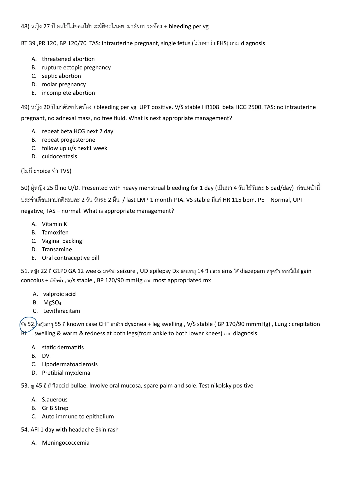
crop
ถูกต้อง
Bilateral warm erythematous leg swelling in chronic heart failure is more consistent with venous stasis dermatitis than cellulitis.
Severe hypertension with papilledema and neurologic symptoms indicates hypertensive emergency, classically hypertensive encephalopathy.
A02-0088A02-Q0088solution_ready
84. Male 27 Y/O presented with extremely agitation and chest pain. He state that he snorting Cocaine all after afternoon. His V/S BT 38 C PR 112 BP 215/130 SpO2 96% PE WNL CXR normal EKG ainus tachycardia rate 116 bpm. What is most appropriate Mx?
crop
ยังไม่ถูก
A. Esmolol
ยังไม่ถูก
B. Labetalol
ยังไม่ถูก
C. Diltiazem
ยังไม่ถูก
D. Haloperidol
ถูกต้อง
Cocaine toxicity with chest pain, hypertension, and agitation is first treated with benzodiazepines.
For EMS-level management of severe pulmonary edema with hypoxemia and shock, immediate oxygenation/ventilatory support is the priority.
A02-0090A02-Q0090solution_ready
11. Female 34 yr brought by her parent after suicidal attempt ingestion some drugs. She had nausea and vomiting, AOC 2 hr after ingestion. V/S T 37c P100 BP 149/90 RR20 O2sat 95%. Heart lung normal. Abd mild tender epigastrium. After evaluation she loss of consciousness and found cardiac arrest. EKG sine wave then monomorphic VT (มีรูป). Lab ABG ph 7.4 PCO2 40 PO2 80 lactate 4, elyte K 7.5. What is toxin?
crop
ยังไม่ถูก
A. Cyanide
ถูกต้อง
GI symptoms, marked hyperkalemia, and ventricular dysrhythmia after drug ingestion are most consistent with severe digoxin poisoning.
GI symptoms, marked hyperkalemia, and ventricular dysrhythmia after drug ingestion are most consistent with severe digoxin poisoning.
A02-0091A02-Q0091solution_ready
75. Male 57 years old, U/D heart disease + COPD, presented with palpitation 2 hr. Deny chest pain, dyspnea, orthopnea, leg edema. T36.6, HR 168, RR 22, BP 109/68 (จำไม่ได้เป้ะ แต่ไม่ drop). PE ~ lung clear. POCUS preserved LVEF, มีบรรยาย echo ปรกติแต่มันหมด no structural heart abnormality, lung A-profile both. EKG as following (จำไม่ได้เป้ะๆ แต่คิดว่าเป็น regular wide QRS). What is the next appropriate management?
crop
ยังไม่ถูก
A. Adenosine
ถูกต้อง
Stable regular wide-complex tachycardia is treated as VT; IV amiodarone is an appropriate pharmacologic option.
Stable AF with WPW should avoid AV nodal blockers such as digoxin, verapamil, and adenosine. The duplicate combined-2025 source shows the missing options D/E and resolves the same item as amiodarone when procainamide is absent.
A02-0094A02-Q0094solution_ready
80. ชายอายุประมาณ 60 ปีกำลัง climbing มีอาการ chest pain sudden dypnea, BP drop HRเร็ว ~120 มี jugular venous engorge heart มี murmur ตรง LUPSB. What is the most appropriate investigation for diagnosis in ED
crop
ถูกต้อง
Acute dyspnea/chest pain with hypotension, JVP elevation, and murmur is best evaluated at bedside with echocardiography.
Orthopnea, crackles, and acute dyspnea are consistent with acute decompensated heart failure/pulmonary edema.
A02-0097A02-Q0097solution_ready
ชาย 60 ปี severe chest pain after forceful vomiting vs BT37 HR 86 BP 110/70 RR24 sat 96 PE all normal ให้ EKG and CXR > bilat pleural effusion ถาม investigation of choice
Severe chest pain after forceful vomiting with pleural effusion suggests Boerhaave syndrome. Duplicate Boerhaave investigation items in A14 list esophagogram as the intended diagnostic investigation.
A02-0098A02-Q0098solution_ready
ชาย 50 ปี u/d COPD with respiratory failure on ETT หลังใส่ ETT 15 นาทีเหนื่อยขึ้น ให้ EKG: STD V1-6 ตอนนี้ setting: PCV mode IP 17 PEEP 5 I:E 1:3 FiO2 0.4 (Vt=7 ml/kg) ถามว่าจะปรับ ventilator ยังไง
crop
ถูกต้อง
In intubated COPD, worsening dyspnea shortly after ventilation can reflect intrinsic PEEP and increased trigger work. The usual broad correction is to reduce minute ventilation and allow more expiratory time, but that option is not visible in this source row. Among the listed choices, a modest increase in external PEEP is the best available adjustment because it can reduce the inspiratory threshold load from auto-PEEP; increasing FiO2, tidal volume, or respiratory rate would not address the mechanics and may worsen dynamic hyperinflation.
In intubated COPD, worsening dyspnea shortly after ventilation can reflect intrinsic PEEP and increased trigger work. The usual broad correction is to reduce minute ventilation and allow more expiratory time, but that option is not visible in this source row. Among the listed choices, a modest increase in external PEEP is the best available adjustment because it can reduce the inspiratory threshold load from auto-PEEP; increasing FiO2, tidal volume, or respiratory rate would not address the mechanics and may worsen dynamic hyperinflation.
A02-0099A02-Q0099solution_ready
135. Girl 4 yr, history of pharyngitis 2 days. She presented with drooling for 1 day, she has neck swelling, fever, trismus, odynophagia, PE: BT 39 C, BP 140/80 mmHg, RR 18/min, PR 112 bpm. HEENT shown hyperextend, stiffness, torticollis, injected pharynx, swelling posterior oropharynx. Lung clear. What is the most likely diagnosis? [MCQ 64]
A) Diphtheria B) Ludwig angina C) Bacterial tracheitis D) Peritonsillar abscess E) Retropharyngeal abscess
The pediatric upper-airway infection pattern described is most consistent with retropharyngeal abscess.
A02-0100A02-Q0100solution_ready
42. A Thai female 68-year-old known underlying of DCM with acute dyspnea. Your physical examination found decreased breath sound both lungs with pitting edema 2+ both legs. Film chest x-ray show new bilateral pleural effusion. Pleural effusion profile: serum LDH 100 U/L [100-200 U/L], protein 7.0 g/dL, albumin 3.5 g/dL; pleural fluid LDH 50 U/L, protein 3.7 g/dL, albumin 2.0 g/dL, pleural cytology pending. What is the suspected cause of pleural effusion?
crop
ถูกต้อง
Heart failure can produce pseudoexudative pleural fluid after diuresis; bilateral effusions in DCM support acute HF.
Q12. Female pregnancy 12 wk, known Graves disease, no treatment, presents with drowsiness, AF rate 160, lung clear, echo good EF. What is initial management?
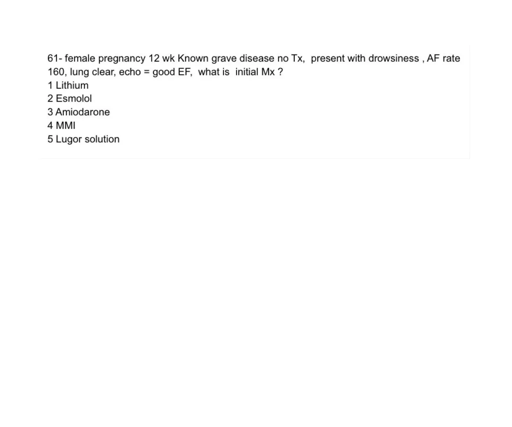
Hyperthyroid test.pdf, source page image p.1
ยังไม่ถูก
A. Lithium
ถูกต้อง
This is thyroid storm physiology in early pregnancy with rapid atrial fibrillation. Among the listed choices, short-acting beta blockade with esmolol is the safest initial stabilizing option for adrenergic control; iodine is not given before thionamide, amiodarone is inappropriate, lithium is not first line, and methimazole is avoided in the first trimester when possible.
ยังไม่ถูก
C. Amiodarone
ยังไม่ถูก
D. MMI
ยังไม่ถูก
E. Lugol solution
Source: Old special HTML: A04 | Page/slot: old-special | Marker: a04-thyroid-and-adrenal-q12
Reference: Source: Old special HTML: A04 | Page/slot: old-special | Marker: a04-thyroid-and-adrenal-q12
ซ่อนเฉลยเปิดเฉลยSolution readyA02-0102 answer
Answer
B. Esmolol
Rationale
This is thyroid storm physiology in early pregnancy with rapid atrial fibrillation. Among the listed choices, short-acting beta blockade with esmolol is the safest initial stabilizing option for adrenergic control; iodine is not given before thionamide, amiodarone is inappropriate, lithium is not first line, and methimazole is avoided in the first trimester when possible.
References
- Source note: Extra A04 hyperthyroid source item recovered from source-failure PDF page 1. - Original reference: Reference: Source: Hyperthyroid test.pdf | p.1
A02-0103A02-Q0103solution_ready
5. Trauma BP drop, Sat drop HEENT - แผลที่หัว จำไม่ได้ว่า bleed มั้ย, neck vein engorge RS - decrease BS RL, เคาะโปร่ง, trachea shift to left CVS - จำไม่ได้ Abd - distend FAST +ve hepatorenal CXR - increased opacity RL ถามว่าทำอะไรก่อน
155. 32 ปี ไข้ ไอ หอบ v/s bp 80/60 sat 88 pulse 140 rr 40 lung crepitation หลังใส่ ett มี pink frothy sputum echo EF 15 ถาม Mx
crop
ถูกต้อง
Fever/cough with shock, pulmonary edema, and EF 15% suggests cardiogenic shock from myocarditis/acute cardiomyopathy. Dobutamine is the listed inotrope for low-output shock.
Fever/cough with shock, pulmonary edema, and EF 15% suggests cardiogenic shock from myocarditis/acute cardiomyopathy. Dobutamine is the listed inotrope for low-output shock.
A boy 5 years old palpitation light-headache after exercise 15 min V/S : BP 80/60 mmHg , RR 28 bpm , HR 220 bpm , BP 37 C EKG : Regular narrow retrograde P wave What is the most sedative drug before cardioversion A Ketamine B Etomidate C Fentanyl D Midazolam E Propofol and Fentanyl
The child has unstable SVT with hypotension and respiratory distress. Unstable tachyarrhythmia requires synchronized cardioversion; sedation is appropriate if it does not delay shock delivery.
ยังไม่ถูก
D. paramedic ท า sedate+ ett offline
ยังไม่ถูก
E. paramedic ท า sedate + paralysis + ett online
Source: Old special HTML: C | Page/slot: old-special | Marker: c-miscellaneous-q4
Reference: Source: Old special HTML: C | Page/slot: old-special | Marker: c-miscellaneous-q4
ซ่อนเฉลยเปิดเฉลยSolution readyA02-0111 answer
Answer
C. paramedic ทำ cardioversion + sedate offline
Rationale
The child has unstable SVT with hypotension and respiratory distress. Unstable tachyarrhythmia requires synchronized cardioversion; sedation is appropriate if it does not delay shock delivery.
Q2. 180. เคสเด็ก 5 ปี BP 72/40 HR 200 SpO2 88 RA มี retraction DTX 330 mg% EKG SVT
MCQ 2566 combined.pdf, p.31
ยังไม่ถูก
A. paramedic ทำ vagal maneuver
ยังไม่ถูก
B. paramedic IV adenosine
ถูกต้อง
SVT with BP 72/40 and respiratory distress is unstable. Synchronized cardioversion is preferred over vagal maneuvers or adenosine when there is shock/hypotension.
ยังไม่ถูก
D. paramedic ทำ sedate + ETT offline
ยังไม่ถูก
E. paramedic ทำ sedate + paralysis + ETT online
Source: Old special HTML: C | Page/slot: old-special | Marker: c-trauma-pediatric-ems-q2
Reference: Source: Old special HTML: C | Page/slot: old-special | Marker: c-trauma-pediatric-ems-q2
ซ่อนเฉลยเปิดเฉลยSolution readyA02-0112 answer
Answer
C. paramedic ทำ cardioversion + sedate offline
Rationale
SVT with BP 72/40 and respiratory distress is unstable. Synchronized cardioversion is preferred over vagal maneuvers or adenosine when there is shock/hypotension.
References
- Source note: Source image preserved from MCQ 2566 combined.pdf p.31. No answer/lesson in this collection pass. - Original reference: Reference: Source: MCQ 2566 combined.pdf | p.31 | full source page rendered; answer intentionally not imported.
STEMI complicated by PEA arrest and pericardial effusion points to ventricular free-wall rupture causing tamponade.
A02-0116A02-Q0116solution_ready
Q22. A 16-year-old man was huffing gas from a bag in his family’s garage. He was startled by his father, who witnessed him collapse. The father noted no pulse immediately after the event and quickly called EMS. He then initiated cardiopulmonary resuscitation (CPR). The patient was taken to the local emergency department where his initial cardiac rhythm was polymorphic ventricular tachycardia. He was defi brillated once, and his rhythm degraded to ventricu lar fibrillation. Which is the MOST APPROPRIATE pharmacologic treatment for the patient’s condition?
McGraw Chapter 13: Toxicologic Disorders, p.178
ยังไม่ถูก
A. Amiodarone
ยังไม่ถูก
B. Epinephrine
ถูกต้อง
Hydrocarbon huffing can sensitize the myocardium to catecholamines and trigger malignant ventricular dysrhythmias. Esmolol is the best listed pharmacologic treatment in this catecholamine-driven setting.
ยังไม่ถูก
D. Procainamide
Source: Old special HTML: A16 | Page/slot: old-special | Marker: a16-mcgraw-board-review-q22
Reference: Source: Old special HTML: A16 | Page/slot: old-special | Marker: a16-mcgraw-board-review-q22
ซ่อนเฉลยเปิดเฉลยSolution readyA02-0116 answer
Answer
C. Esmolol
Rationale
Hydrocarbon huffing can sensitize the myocardium to catecholamines and trigger malignant ventricular dysrhythmias. Esmolol is the best listed pharmacologic treatment in this catecholamine-driven setting.
Q24. A 45-year-old female was found unconscious and brought to the ED. Physical examination revealed BT 35.5 C, BP 71/48 mmHg, HR 59/min, RR 18/min, face and extremities edematous and non-pitting edema, dry cool slightly mottled and desquamated skin, sluggish eyes, decerebrate gestures, Babinski sign, DTX 104 mg%, ECG sinus bradycardia. CT brain normal. Which investigation is most useful further investigation?
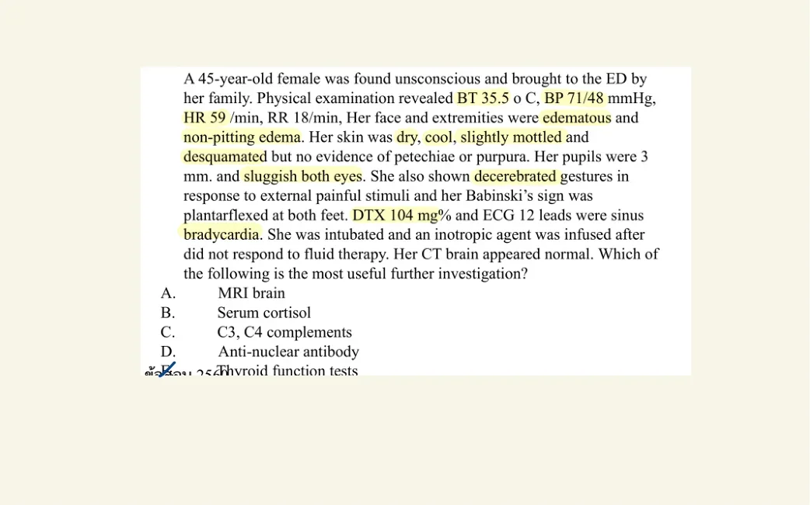
ข้อสอบ Hypothyroid.pdf, source page image p.3
ยังไม่ถูก
A. MRI brain
ยังไม่ถูก
B. Serum cortisol
ยังไม่ถูก
C. C3, C4 complements
ยังไม่ถูก
D. Anti-nuclear antibody
ถูกต้อง
Hypothermia, bradycardia, hypotension, nonpitting edema, dry cool skin, and altered consciousness after a normal brain CT point toward myxedema coma; thyroid function testing is the most useful next investigation from the options.
Source: Old special HTML: A04 | Page/slot: old-special | Marker: a04-thyroid-and-adrenal-q24
Reference: Source: Old special HTML: A04 | Page/slot: old-special | Marker: a04-thyroid-and-adrenal-q24
ซ่อนเฉลยเปิดเฉลยSolution readyA02-0117 answer
Answer
E. Thyroid function tests
Rationale
Hypothermia, bradycardia, hypotension, nonpitting edema, dry cool skin, and altered consciousness after a normal brain CT point toward myxedema coma; thyroid function testing is the most useful next investigation from the options.
References
- Source note: Extra A04 hypothyroid/myxedema source item recovered from ข้อสอบ Hypothyroid.pdf page 3; answers intentionally omitted. - Original reference: Reference: Source: ข้อสอบ Hypothyroid.pdf | p.3
A02-0118A02-Q0118solution_ready
Q23. A 20-year-old foreign exchange student is in central Africa when he is diagnosed with malaria. He is pre scribed quinine as monotherapy and discharged from clinic. He soon learns about a tragedy at home and overdoses on his newly prescribed medication. He quickly regrets his decision and returns to clinic. He is found to be nauseated, vomiting, and complains of tinnitus. He is noted to be hypotensive and an elec trocardiogram displays significant QRS widening and QTc prolongation with intermittent runs of poly morphic ventricular tachycardia. Which is the MOST useful therapy in this scenario?
McGraw Chapter 13: Toxicologic Disorders, p.178
ยังไม่ถูก
A. Amiodarone
ยังไม่ถูก
B. Hemodialysis
ยังไม่ถูก
C. High-dose diazepam
ถูกต้อง
Quinine overdose can cause cinchonism, hypotension, QRS/QTc abnormalities, and ventricular dysrhythmias. Multidose activated charcoal enhances quinine elimination and is the most useful listed therapy.
Source: Old special HTML: A16 | Page/slot: old-special | Marker: a16-mcgraw-board-review-q23
Reference: Source: Old special HTML: A16 | Page/slot: old-special | Marker: a16-mcgraw-board-review-q23
ซ่อนเฉลยเปิดเฉลยSolution readyA02-0118 answer
Answer
D. Multidose activated charcoal
Rationale
Quinine overdose can cause cinchonism, hypotension, QRS/QTc abnormalities, and ventricular dysrhythmias. Multidose activated charcoal enhances quinine elimination and is the most useful listed therapy.
Q29. An 18-month-old boy is brought to the emergency department unresponsive after he was found with one of his mother’s “pain pills.” The patient is noted to be bradypneic, hypopneic, and bradycardic. His res pirations are quickly assisted, and intravenous access is obtained. You note pinpoint pupils and admin ister 0.1 mg/kg of naloxone. The patient’s heart and respiratory rates quickly improve. An electrocardio gram shows sinus bradycardia with a prolonged QTc. Forty-five minutes after naloxone administration, he is noted to be increasingly somnolent and therefore given a second dose of naloxone. What is the BEST course of action for this patient?
McGraw Chapter 13: Toxicologic Disorders, p.178
ยังไม่ถูก
A. Administer a dose of activated charcoal
ยังไม่ถูก
B. Await sobriety in the emergency department
ถูกต้อง
Recurrent opioid toxidrome after an initial naloxone response suggests ongoing or long-acting opioid effect. A naloxone infusion with admission is safer than repeated observation-only boluses.
ยังไม่ถูก
D. Obtain an abdominal radiograph
Source: Old special HTML: A16 | Page/slot: old-special | Marker: a16-mcgraw-board-review-q29
Reference: Source: Old special HTML: A16 | Page/slot: old-special | Marker: a16-mcgraw-board-review-q29
ซ่อนเฉลยเปิดเฉลยSolution readyA02-0119 answer
Answer
C. Initiate a naloxone drip and admit
Rationale
Recurrent opioid toxidrome after an initial naloxone response suggests ongoing or long-acting opioid effect. A naloxone infusion with admission is safer than repeated observation-only boluses.
Q37. 11. Female 34 yr brought by her parent after suicidal attempt ingestion some drugs. She had nausea and vomiting, AOC 2 hr after ingestion. V/S T 37c P100 BP 149/90 RR20 O2sat 95%. Heart lung normal. Abd mild tender epigastrium. After evaluation she loss of consciousness and found cardiac arrest. EKG sine wave then monomorphic VT (มีรูป) Lab ABG pH 7.4 PCO2 40 PO2 80 lactate 4, electrolyte K 7.5 What is toxin?
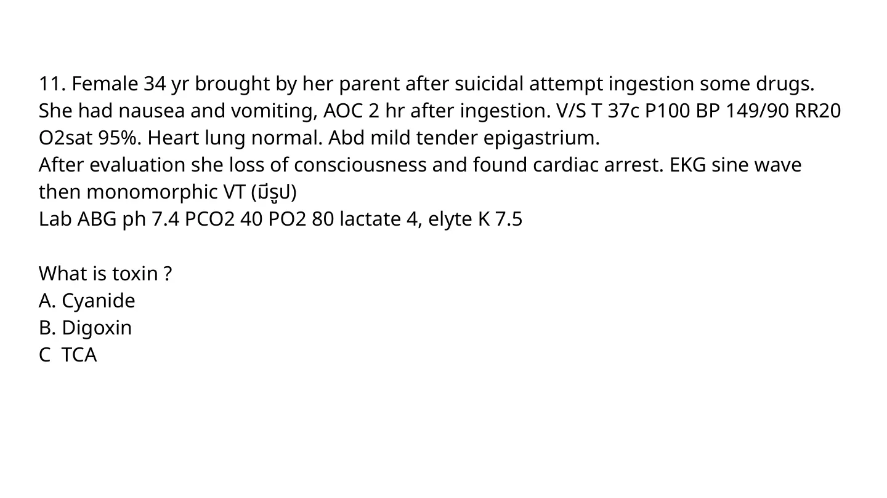
MCQ 2025 รวมไม่แยกหัวข้อ.pdf, p.9
ยังไม่ถูก
A. Cyanide
ถูกต้อง
Severe hyperkalemia with sine-wave ECG progression and ventricular dysrhythmia after ingestion is most consistent with life-threatening digoxin poisoning among the listed toxins.
ยังไม่ถูก
C. TCA
Source: Old special HTML: A16 | Page/slot: old-special | Marker: a16-miscellaneous-q37
Reference: Source: Old special HTML: A16 | Page/slot: old-special | Marker: a16-miscellaneous-q37
ซ่อนเฉลยเปิดเฉลยSolution readyA02-0120 answer
Answer
B. Digoxin
Rationale
Severe hyperkalemia with sine-wave ECG progression and ventricular dysrhythmia after ingestion is most consistent with life-threatening digoxin poisoning among the listed toxins.
References
- Source note: Source image preserved from MCQ 2025 รวมไม่แยกหัวข้อ.pdf p.9. No answer/lesson in this collection pass. - Original reference: Reference: Source: MCQ 2025 รวมไม่แยกหัวข้อ.pdf | p.9 | full source page rendered; answer intentionally not imported.
A02-0121A02-Q0121solution_ready
Q39. ผู้ป่วย MDD on amitriptyline present with palpitation BT 39 PR 120 RR 24 BP 125/78 sat 98% RA. EKG shown. What is the most proper management?
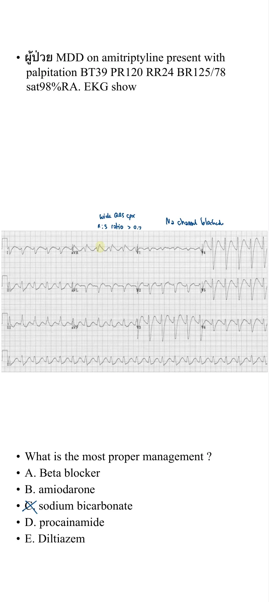
TEST.pdf, p.4-5-6
ยังไม่ถูก
A. Beta blocker
ยังไม่ถูก
B. amiodarone
ถูกต้อง
Amitriptyline overdose causes sodium-channel blockade with tachycardia and ECG widening/arrhythmia risk. Sodium bicarbonate is the key treatment.
ยังไม่ถูก
D. procainamide
ยังไม่ถูก
E. Diltiazem
Source: Old special HTML: A16 | Page/slot: old-special | Marker: a16-miscellaneous-q39
Reference: Source: Old special HTML: A16 | Page/slot: old-special | Marker: a16-miscellaneous-q39
ซ่อนเฉลยเปิดเฉลยSolution readyA02-0121 answer
Answer
C. sodium bicarbonate
Rationale
Amitriptyline overdose causes sodium-channel blockade with tachycardia and ECG widening/arrhythmia risk. Sodium bicarbonate is the key treatment.
References
- Source note: Source image preserved from TEST.pdf p.4-5-6. No answer/lesson in this collection pass. - Original reference: Reference: Source: TEST.pdf | p.4-5-6 | full source page rendered; answer intentionally not imported.
A02-0122A02-Q0122solution_ready
Q10. SHOWN BELOW. DURING EVALUATION, THE PATIENT DEVELOPS INTERMITTENT RUN OF VT . WHAT IS THE BEST PHARMACOLOGICAL THERAPY OF THIS PATIENT
Substance test-1.pdf, p.2
ถูกต้อง
The source image shows cocaine/sympathomimetic exposure with wide-QRS toxicity and intermittent VT, and the page marks bicarbonate. Sodium bicarbonate treats sodium-channel blockade and wide-complex ventricular dysrhythmia in this setting.
Source: Old special HTML: A16 | Page/slot: old-special | Marker: a16-opioid-sedative-and-substance-q10
Reference: Source: Old special HTML: A16 | Page/slot: old-special | Marker: a16-opioid-sedative-and-substance-q10
ซ่อนเฉลยเปิดเฉลยSolution readyA02-0122 answer
Answer
4. Bicarbonate
Rationale
The source image shows cocaine/sympathomimetic exposure with wide-QRS toxicity and intermittent VT, and the page marks bicarbonate. Sodium bicarbonate treats sodium-channel blockade and wide-complex ventricular dysrhythmia in this setting.
References
- Source note: Source image preserved from Substance test-1.pdf p.2. No answer/lesson in this collection pass. - Original reference: Reference: Source: Substance test-1.pdf | p.2 | full source page rendered; answer intentionally not imported.
A02-0123A02-Q0123solution_ready
Q19. A 41-year-old man with no past medical history presents to the emergency department with signifi cant chest pain and diaphoresis. The patient takes no medications and has no allergies. He is tachycardic, diaphoretic, and hypertensive. The patient’s ECG dem onstrates no significant ST or T-wave abnormalities and is notable only for his heart rate. The patient admits to using cocaine prior to presenting to the emergency department. Which is the NEXT APPROPRIATE step in management?
McGraw Chapter 5: Cardiovascular Disorders, p.46
ถูกต้อง
Cocaine-associated chest pain without STEMI is treated with aspirin, nitrates, and benzodiazepines plus observation/serial testing. Beta blockade is avoided in the acute sympathomimetic phase.
ยังไม่ถูก
B. Complete a thrombolysis in acute myocardial infarction (TIMI) score in order to guide treat ment and management.
ยังไม่ถูก
C. Consult cardiology and administer 1 mg/kg of subcutaneous enoxaparin.
ยังไม่ถูก
D. Obtain an echocardiogram, administer 5 mg metoprolol IV, and admit to observation for serial ECGs and cardiac enzymes.
Source: Old special HTML: A16 | Page/slot: old-special | Marker: a16-opioid-sedative-and-substance-q19
Reference: Source: Old special HTML: A16 | Page/slot: old-special | Marker: a16-opioid-sedative-and-substance-q19
ซ่อนเฉลยเปิดเฉลยSolution readyA02-0123 answer
Answer
A. Administer 324 mg of chewable aspirin, 0.4 mg sublingual nitroglycerin, and 1 mg of IV lorazepam, and admit to observation for serial cardiac enzymes.
Rationale
Cocaine-associated chest pain without STEMI is treated with aspirin, nitrates, and benzodiazepines plus observation/serial testing. Beta blockade is avoided in the acute sympathomimetic phase.
References
- Source note: Source image preserved from McGraw Chapter 5: Cardiovascular Disorders p.46. No answer/lesson in this collection pass. - Original reference: Reference: Source: McGraw Chapter 5: Cardiovascular Disorders | p.46 | full source page rendered; answer intentionally not imported.
A02-0124A02-Q0124solution_ready
Q28. A 44 yrs old man with drug abused present with acute chest pain. His EKG is shown below. During evaluation, the patient develops intermittent run of VT. What is the best pharmacological therapy of this patient?
Substance test-1.pdf, p.2
ยังไม่ถูก
A. Esmolol
ยังไม่ถูก
B. Diltiazem
ยังไม่ถูก
C. Amiodarone
ถูกต้อง
The preserved source image marks bicarbonate. In cocaine/sympathomimetic toxicity with wide-complex ventricular dysrhythmia, sodium bicarbonate is the best listed pharmacologic therapy.
ยังไม่ถูก
E. Magnesium sulfate
Source: Old special HTML: A16 | Page/slot: old-special | Marker: a16-opioid-sedative-and-substance-q28
Reference: Source: Old special HTML: A16 | Page/slot: old-special | Marker: a16-opioid-sedative-and-substance-q28
ซ่อนเฉลยเปิดเฉลยSolution readyA02-0124 answer
Answer
D. Bicarbonate
Rationale
The preserved source image marks bicarbonate. In cocaine/sympathomimetic toxicity with wide-complex ventricular dysrhythmia, sodium bicarbonate is the best listed pharmacologic therapy.
References
- Source note: Source image preserved from Substance test-1.pdf p.2. No answer/lesson in this collection pass. - Original reference: Reference: Source: Substance test-1.pdf | p.2 | full source page rendered; answer intentionally not imported.
A02-0125A02-Q0125solution_ready
Q6. A 44-year-old man with drug abuse presents with acute chest pain. His EKG is shown below. During evaluation, the patient develops intermittent run of VT. What is the best pharmacological therapy for this patient? 1. Esmolol 2. Diltiazem 3. Amiodarone 4. Bicarbonate 5. Magnesium sulfate
Substance test-1.pdf, p.1
Source: Old special HTML: A16 | Page/slot: old-special | Marker: a16-opioid-sedative-and-substance-q6
Reference: Source: Old special HTML: A16 | Page/slot: old-special | Marker: a16-opioid-sedative-and-substance-q6
ซ่อนเฉลยเปิดเฉลยSolution readyA02-0125 answer
Answer
4. Bicarbonate
Rationale
This is the same Substance test item as A02-0124 with numbered choices. The source image marks bicarbonate, matching treatment of sodium-channel blockade/wide-complex VT in cocaine toxicity.
References
- Source note: Source file: Substance test-1.pdf | Targeted repair from Substance test-1.pdf. No explicit answer key was present in the source. - Original reference: Reference: Source: Substance test-1.pdf | p.1-8
A02-0126A02-Q0126solution_ready
Q12. คําถามทีÉ 9 ท่านเป็นแพทย์ออกเหตุกับทีม ALS ผู้ป่วยหญิง 60 ปี หอบเหนืÉอยนอน ราบไม่ได้ 3 วัน โรคประจําตัวเป็น ischemic cardiomyopathy. ตรวจ ร่างกายทีÉเกิดเหตุT 37 c P 110/min RR 30/min BP 90/60 mmHg O2sat 92% (mask with bag 10 LPM). alert and looked dyspnea. Her breath sound was bilateral fine crepitation. Her BMI was 30 kg/m2 Her monitor ECG showed atrial fibrillation rate 110/min. ระยะทางไปรพ.ประมาณ 10 นาที การรักษาข้อใดเหมาะสมทีÉสุด
อ.ศรัทธา - Medical oversight in EMS 2021.pdf, p.78
Source: Old special HTML: C | Page/slot: old-special | Marker: c-medical-oversight-and-command-q12
Reference: Source: Old special HTML: C | Page/slot: old-special | Marker: c-medical-oversight-and-command-q12
ซ่อนเฉลยเปิดเฉลยSolution readyA02-0126 answer
Answer
Support oxygenation and rapid transport; consider cautious CPAP/NIPPV only if blood pressure tolerates, and avoid preload-reducing drugs such as nitrates in this hypotensive patient.
Rationale
The patient has acute cardiogenic pulmonary edema from ischemic cardiomyopathy but is borderline hypotensive at 90/60 and only 10 minutes from hospital. The safest prehospital approach is airway/oxygen support and rapid transport; nitrates or aggressive diuresis can worsen shock, and AF at 110/min is not the immediate target.
References
- Source note: Paired source image preserved from อ.ศรัทธา - Medical oversight in EMS 2021.pdf p.78. No answer/lesson in this collection pass. - Original reference: Reference: Source: อ.ศรัทธา - Medical oversight in EMS 2021.pdf | p.78 | paired source pages rendered; answer intentionally not imported.
A02-0127A02-Q0127solution_ready
Q26. 97. A 67-year-old man is experiencing chest pain. He has a history of hypertension. His BP is 200/130 mmHg. Prehospital 12-lead ECG reveals ST-segment depression in inferior and anterior leads. What is the most appropriate action by the on-scene EMS physician?
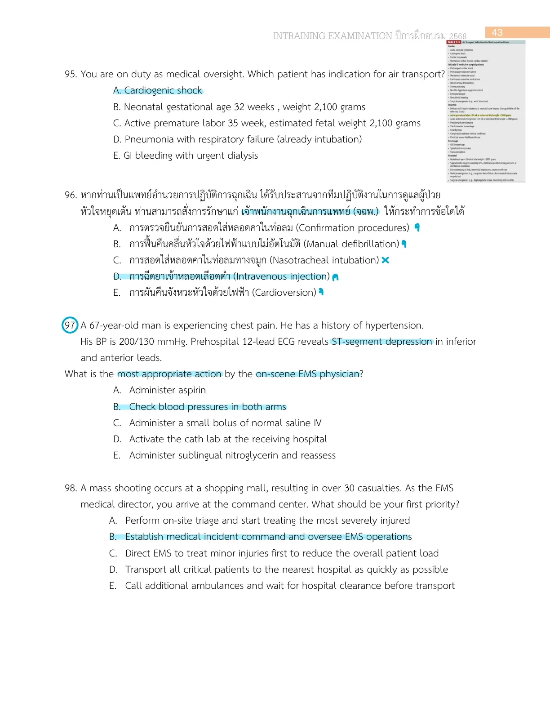
Intraining exam 100 ข้อ 12 Jan 2026.pdf, p.44
ยังไม่ถูก
A. Administer aspirin
ยังไม่ถูก
B. Check blood pressures in both arms
ยังไม่ถูก
C. Administer a small bolus of normal saline IV
ยังไม่ถูก
D. Activate the cath lab at the receiving hospital
ถูกต้อง
Severe hypertension with ischemic chest pain and ST depression is compatible with hypertensive ACS/ischemia. Sublingual nitroglycerin with reassessment is the best listed immediate prehospital treatment.
Source: Old special HTML: C | Page/slot: old-special | Marker: c-medical-oversight-and-command-q26
Reference: Source: Old special HTML: C | Page/slot: old-special | Marker: c-medical-oversight-and-command-q26
ซ่อนเฉลยเปิดเฉลยSolution readyA02-0127 answer
Answer
E. Administer sublingual nitroglycerin and reassess
Rationale
Severe hypertension with ischemic chest pain and ST depression is compatible with hypertensive ACS/ischemia. Sublingual nitroglycerin with reassessment is the best listed immediate prehospital treatment.
References
- Source note: Source image preserved from Intraining exam 100 ข้อ 12 Jan 2026.pdf p.44. No answer/lesson in this collection pass. - Original reference: Reference: Source: Intraining exam 100 ข้อ 12 Jan 2026.pdf | p.44 | full source page rendered; answer intentionally not imported.
A02-0128A02-Q0128solution_ready
Q28. 100. BLS team was dispatched to get the woman who had palpitation. She felt dizzy and chest tightness. Vital sign T 37°C, PR 30, RR 20, BP 80/50 mmHg O2sat 92%. ECG monitor second degree AV block (Mobitz II). Which of the following is appropriate management?
Intraining exam 100 ข้อ 12 Jan 2026.pdf, p.45
ยังไม่ถูก
A. IV fluid
ยังไม่ถูก
B. O2 cannular
ถูกต้อง
Symptomatic Mobitz II with HR 30, hypotension, dizziness, and chest tightness is unstable high-grade conduction disease. Pacing is preferred; atropine may be unreliable in Mobitz II.
ยังไม่ถูก
D. Atropine 1 mg IV
ยังไม่ถูก
E. Synchronous cardioversion
Source: Old special HTML: C | Page/slot: old-special | Marker: c-medical-oversight-and-command-q28
Reference: Source: Old special HTML: C | Page/slot: old-special | Marker: c-medical-oversight-and-command-q28
ซ่อนเฉลยเปิดเฉลยSolution readyA02-0128 answer
Answer
C. Cardiac pacing
Rationale
Symptomatic Mobitz II with HR 30, hypotension, dizziness, and chest tightness is unstable high-grade conduction disease. Pacing is preferred; atropine may be unreliable in Mobitz II.
References
- Source note: Source image preserved from Intraining exam 100 ข้อ 12 Jan 2026.pdf p.45. No answer/lesson in this collection pass. - Original reference: Reference: Source: Intraining exam 100 ข้อ 12 Jan 2026.pdf | p.45 | full source page rendered; answer intentionally not imported.
A02-0129A02-Q0129solution_ready
Q19. ชายอายุ 67 yo, EMS ออกรับ EKG : STEMI รพ.ใกล้ 15 min ไม่มี PCI, รพ. ไกล 45 min มี PCI 1. ASA only 2. Fibrinolysis 3. direct PCI 4. Clopidogrel only 5. Urgent CABG
MCQ 2025 แยกหัวข้อ.pdf, p.176
Source: Old special HTML: C | Page/slot: old-special | Marker: c-prehospital-care-practice-q19
Reference: Source: Old special HTML: C | Page/slot: old-special | Marker: c-prehospital-care-practice-q19
ซ่อนเฉลยเปิดเฉลยSolution readyA02-0129 answer
Answer
3. direct PCI
Rationale
For STEMI, direct transport to a PCI-capable hospital 45 minutes away keeps expected PCI timing within the usual guideline window and is preferred over stopping at a nearer non-PCI hospital.
The patient has stable SVT with normal blood pressure and no chest pain or dyspnea. Initial management is a vagal maneuver such as carotid sinus massage before cardioversion.
ยังไม่ถูก
B. cardioversion
ยังไม่ถูก
C. [source option unreadable]
ยังไม่ถูก
D. แจ้ง EMD แล้ว carotid sinus massage
ยังไม่ถูก
E. แจ้ง EMD แล้ว cardioversion
Source: Old special HTML: C | Page/slot: old-special | Marker: c-prehospital-care-practice-q2
Reference: Source: Old special HTML: C | Page/slot: old-special | Marker: c-prehospital-care-practice-q2
ซ่อนเฉลยเปิดเฉลยSolution readyA02-0130 answer
Answer
A. carotid sinus massage
Rationale
The patient has stable SVT with normal blood pressure and no chest pain or dyspnea. Initial management is a vagal maneuver such as carotid sinus massage before cardioversion.
- AMA Code of Medical Ethics, Informed Consent: assess capacity and explain diagnosis, options, risks, benefits, and forgoing treatment. https://code-medical-ethics.ama-assn.org/ethics-opinions/informed-consent
A02-0132A02-Q0132solution_ready
Q14. An 86-year-old woman with a history of hypertension and coronary artery disease presents to the emergency department with altered mental status. She lives alone and appears unkempt. Her vital signs are T 35.3°C, HR 45, BP 87/56, and RR 7. Physical examination findings are notable for periorbital puffiness, nonpitting edema, and delayed relaxation of the ankle tendon reflex. Which of the following is the MOST APPROPRIATE initial pharmacotherapy for this condition?
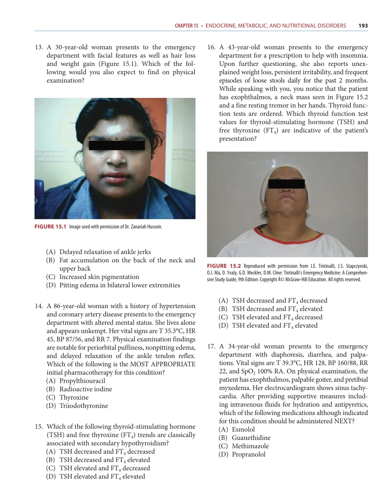
McGraw Chapter 15, source page image p.204
ยังไม่ถูก
A. Propylthiouracil
ยังไม่ถูก
B. Radioactive iodine
ถูกต้อง
Altered mental status, hypothermia, bradycardia, hypotension, hypoventilation, periorbital puffiness, nonpitting edema, and delayed reflex relaxation indicate myxedema coma. Initial pharmacotherapy is thyroid hormone replacement with thyroxine.
ยังไม่ถูก
D. Triiodothyronine
Source: Old special HTML: A04 | Page/slot: old-special | Marker: a04-mcgraw-board-review-q14
Reference: Source: Old special HTML: A04 | Page/slot: old-special | Marker: a04-mcgraw-board-review-q14
ซ่อนเฉลยเปิดเฉลยSolution readyA02-0132 answer
Answer
C. Thyroxine
Rationale
Altered mental status, hypothermia, bradycardia, hypotension, hypoventilation, periorbital puffiness, nonpitting edema, and delayed reflex relaxation indicate myxedema coma. Initial pharmacotherapy is thyroid hormone replacement with thyroxine.
References
- Source note: Source file: McGraw Chapter 15: Endocrine, Metabolic, and Nutritional Disorders - Original reference: Reference: Source: McGraw Chapter 15: Endocrine, Metabolic, and Nutritional Disorders | p.202-205
A02-0133A02-Q0133solution_ready
Q32. A 39-year-old woman with 4 days of diarrhea develops mood swings/confusion. She takes medication for a neck problem. BT 38.6, HR 140, BP 130/45, AF with normal QRS. After ABCs, most appropriate next step?
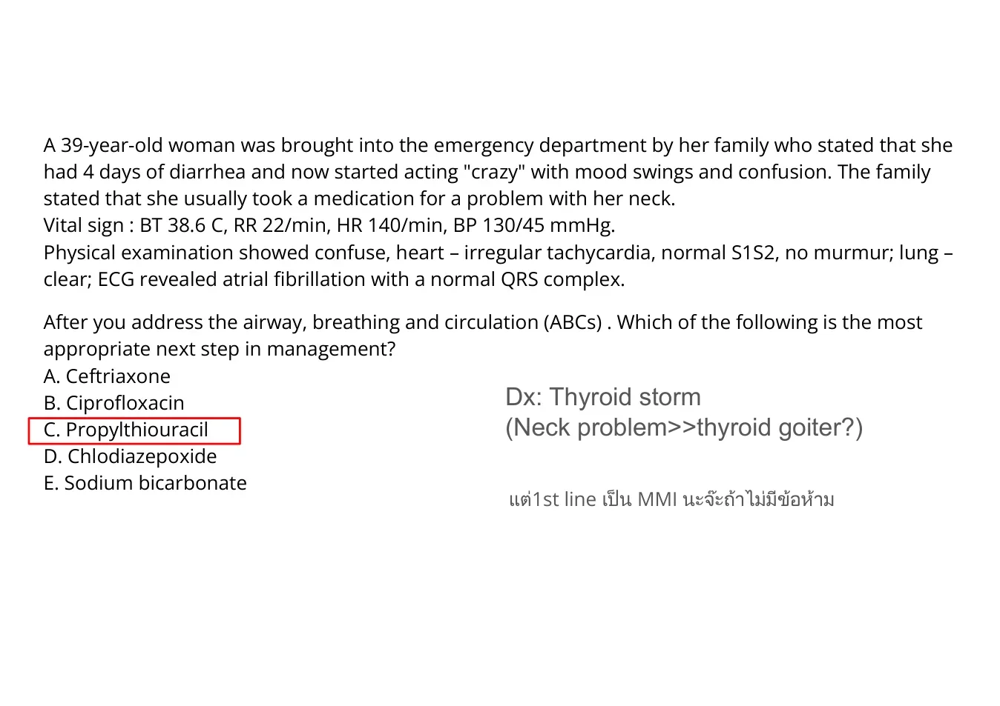
Endopdf.pdf, source page image p.130
ยังไม่ถูก
A. Ceftriaxone
ยังไม่ถูก
B. Ciprofloxacin
ถูกต้อง
Fever, confusion, diarrhea, atrial fibrillation, and a thyroid history fit thyroid storm. PTU is the best listed initial antithyroid drug because it blocks new hormone synthesis and also decreases peripheral T4-to-T3 conversion.
ยังไม่ถูก
D. Chlordiazepoxide
ยังไม่ถูก
E. Sodium bicarbonate
Source: Old special HTML: A04 | Page/slot: old-special | Marker: a04-thyroid-and-adrenal-q32
Reference: Source: Old special HTML: A04 | Page/slot: old-special | Marker: a04-thyroid-and-adrenal-q32
ซ่อนเฉลยเปิดเฉลยSolution readyA02-0133 answer
Answer
C. Propylthiouracil
Rationale
Fever, confusion, diarrhea, atrial fibrillation, and a thyroid history fit thyroid storm. PTU is the best listed initial antithyroid drug because it blocks new hormone synthesis and also decreases peripheral T4-to-T3 conversion.
References
- Source note: Extra A04 source item recovered from Endopdf.pdf page 130; answers intentionally omitted. - Original reference: Reference: Source: Endopdf.pdf | p.130
A02-0134A02-Q0134solution_ready
Q35. A Thai male 30-year-old with asthma presents with palpitation, fever, AF rate 160, agitation/confusion, exophthalmos, thyroid enlargement, lung crepitations, edema, TSH low, FT3/FT4 high. Which is the most appropriate management?
Endopdf.pdf, source page image p.138
ยังไม่ถูก
A. Esmolol 250 mcg/kg IV load to inhibit peripheral adrenergic effect
ถูกต้อง
This is thyroid storm. PTU is the first antithyroid step from the options; iodine such as Lugol should be delayed until after thionamide therapy, and esmolol is risky in this asthmatic patient with crepitations/edema.
ยังไม่ถูก
C. Lugol solution 10 drops after giving PTU at least 1 hour
ยังไม่ถูก
D. Hydrocortisone 300 mg IV to inhibit thyroid hormone synthesis
ยังไม่ถูก
E. MMI 20 mg oral to inhibit peripheral adrenergic effect
Source: Old special HTML: A04 | Page/slot: old-special | Marker: a04-thyroid-and-adrenal-q35
Reference: Source: Old special HTML: A04 | Page/slot: old-special | Marker: a04-thyroid-and-adrenal-q35
ซ่อนเฉลยเปิดเฉลยSolution readyA02-0134 answer
Answer
B. PTU 500 mg oral to inhibit thyroid hormone synthesis
Rationale
This is thyroid storm. PTU is the first antithyroid step from the options; iodine such as Lugol should be delayed until after thionamide therapy, and esmolol is risky in this asthmatic patient with crepitations/edema.
References
- Source note: Extra A04 source item recovered from Endopdf.pdf page 138; answers intentionally omitted. - Original reference: Reference: Source: Endopdf.pdf | p.138
A02-0135A02-Q0135solution_ready
Q42. An 88-year-old woman with a history of coronary artery disease, chronic renal insufficiency, and dia betes mellitus presents to the emergency department with family for 3 days of fever and now altered men tation. On examination, the patient is febrile, there is a wound on the right leg with purulent drainage and crepitus, and you notice a red, macular rash that involves her palms and soles. The rash does not seem painful to palpation. What is the MOST LIKELY diagnosis?
ยังไม่ถูก
A. Kawasaki’s disease
ยังไม่ถูก
B. Meningococcemia
ถูกต้อง
C. Streptococcal toxic shock syndrome
ยังไม่ถูก
D. Toxic epidermal necrolysis
Source: Old special HTML: A09 | Page/slot: old-special | Marker: a09-mcgraw-board-review-q42
Reference: Source: Old special HTML: A09 | Page/slot: old-special | Marker: a09-mcgraw-board-review-q42
Q5. A 50-year-old man, managed in the medical intensive care unit after recent emergency department resuscitation for ventricular fibrillation cardiac arrest 3 days prior, complains of a cough and pleuritic, left-sided chest pain. His hospital course is as follows: return of spontaneous circulation was achieved after three rounds of cardiopulmonary resuscitation with defibrillation, epinephrine, and amiodarone; his electrocardiogram after resuscitation showed ST-segment elevations in leads V2 to V5 with reciprocal changes in the inferior leads. He was started on aspirin, clopidogrel, and heparin, and taken to the cardiac catheterization lab, where angioplasty and stenting were performed uneventfully. He was admitted to the medical intensive care unit for further management and was continued on the aspirin and clopidogrel, with the addition of metoprolol and atorvastatin. He now endorses cough, productive of foul-smelling green sputum, fevers, nausea, and fatigue. His vital signs are T 39°C, HR 90, RR 24, BP 162/94, and SpO2 92% on RA. A chest x-ray shows a small, left-sided pleural effusion, and a left lower lobe infiltrate in the retrocardiac space. Which of the following is the MOST LIKELY diagnosis?
ถูกต้อง
A. Aspiration pneumonia
ยังไม่ถูก
B. Dressler syndrome
ยังไม่ถูก
C. Empyema
ยังไม่ถูก
D. Pneumonitis
Source: Old special HTML: A09 | Page/slot: old-special | Marker: a09-mcgraw-board-review-q5
Reference: Source: Old special HTML: A09 | Page/slot: old-special | Marker: a09-mcgraw-board-review-q5
Source: Old special HTML: A09 | Page/slot: old-special | Marker: a09-pediatric-exanthem-vaccine-fever-q12
Reference: Source: Old special HTML: A09 | Page/slot: old-special | Marker: a09-pediatric-exanthem-vaccine-fever-q12
ซ่อนเฉลยเปิดเฉลยSolution readyA02-0138 answer
Answer
B
Rationale
Rationale not imported.
References
- Source note: Source file: รวมข้อสอบ-board-2562-CHULA.pdf - Original reference: Reference: Source: รวมข้อสอบ-board-2562-CHULA.pdf | p.26-26 | Kept in A09 special as a pediatric fever/exanthem infection-mimic differential.
A02-0139A02-Q0139solution_ready
Q1. A 14-year-old female with previously repaired congenital heart disease, now with a bovine mitral valve, presents to your emergency department with a complaint of acute onset of right-sided weakness. This occurred about 30 minutes prior to arrival. She also reports fatigue and intermittent fevers for the past week. On exam, the patient has 3/5 strength in her right upper and lower extremities, and you hear a low-grade systolic murmur. What is the recommended empiric antibiotic choice for this child?
Source: Old special HTML: A09 | Page/slot: old-special | Marker: a09-sepsis-ie-special-host-q1
Reference: Source: Old special HTML: A09 | Page/slot: old-special | Marker: a09-sepsis-ie-special-host-q1
ซ่อนเฉลยเปิดเฉลยSolution readyA02-0139 answer
Answer
C
Rationale
Rationale not imported.
References
- Source note: Source file: Intraining exam 100 ข้อ 12 Jan 2026.pdf - Original reference: Reference: Source: Intraining exam 100 ข้อ 12 Jan 2026.pdf | p.7 | Teaching reference: Tintinalli Ch.156 Endocarditis p.1043-1048; Tables 156-1 to 156-5.
A02-0140A02-Q0140solution_ready
Q1. A 40-year-old woman came to the ER, presenting with syncope after taking an unspecified number of pills three hours ago. Her husband reported that she had taken 30 tabs of digoxin prior to this. Her heart rate is 30 bpm, BP 80/60 mmHg, RR 20/min, SpO2 96%. After initial management with Atropine IV, the heart rate remained of 30 bpm. Which of the following is the most appropriate management in this patient?
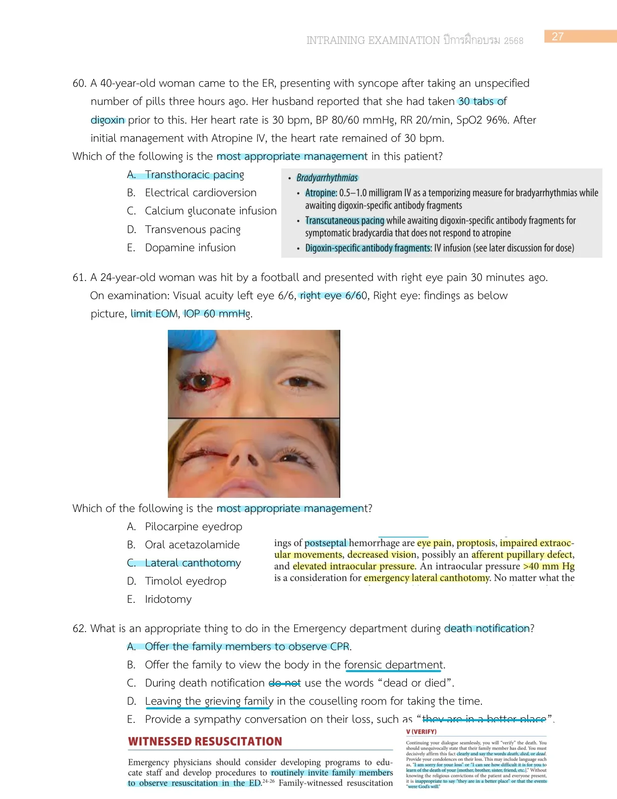
Intraining exam 100 ข้อ 12 Jan 2026, p.28
ยังไม่ถูก
A. Transthoracic pacing
ยังไม่ถูก
B. Electrical cardioversion
ยังไม่ถูก
C. Calcium gluconate infusion
ยังไม่ถูก
D. Transvenous pacing
ถูกต้อง
Severe digoxin poisoning with unstable bradycardia ideally needs digoxin-specific Fab, but it is not listed. After atropine fails, dopamine infusion is the best listed bridge for perfusion while avoiding electrical pacing unless absolutely necessary because pacing can provoke malignant dysrhythmia in digoxin toxicity.
Source: Old special HTML: A16 | Page/slot: old-special | Marker: a16-cardiotoxic-and-antihypertensive-q1
Reference: Source: Old special HTML: A16 | Page/slot: old-special | Marker: a16-cardiotoxic-and-antihypertensive-q1
ซ่อนเฉลยเปิดเฉลยSolution readyA02-0140 answer
Answer
E. Dopamine infusion
Rationale
Severe digoxin poisoning with unstable bradycardia ideally needs digoxin-specific Fab, but it is not listed. After atropine fails, dopamine infusion is the best listed bridge for perfusion while avoiding electrical pacing unless absolutely necessary because pacing can provoke malignant dysrhythmia in digoxin toxicity.
References
- Source note: Source file: Intraining exam 100 ข้อ 12 Jan 2026 | Intraining source-preserving stem/options. No official answer key was found in the PDF; keep unanswered until verified. | Review flags: missing_verified_answer_key - Original reference: Reference: Source: Intraining exam 100 ข้อ 12 Jan 2026 | p.28
A02-0145A02-Q0145solution_ready
Q27. 99. A 68-year-old woman with a history of hypertension and atrial fibrillation is found unresponsive at home by her daughter. EMS arrives within 20 minutes of the call. On assessment, she has slurred speech, right-sided hemiparesis, and a GCS of 12. Blood glucose is 110 mg/dL. The nearest stroke-capable hospital is 45 minutes away. What is the most appropriate prehospital intervention for this patient?
Intraining exam 100 ข้อ 12 Jan 2026.pdf, p.45
ยังไม่ถูก
A. Delay transport to obtain a field CT scan at a mobile stroke unit
ยังไม่ถูก
B. Administer 2 mg of midazolam IV for possible seizure and reassess
ยังไม่ถูก
C. Administer aspirin 300 mg orally and transport to the nearest hospital
ยังไม่ถูก
D. Perform rapid sequence intubation due to the risk of airway compromise
ถูกต้อง
This is an acute focal neurologic deficit with normal glucose and early EMS contact. Prehospital priority is stroke-code activation and transport to a thrombolysis-capable stroke center, not aspirin, benzodiazepine, or delaying transport.
Source: Old special HTML: C | Page/slot: old-special | Marker: c-medical-oversight-and-command-q27
Reference: Source: Old special HTML: C | Page/slot: old-special | Marker: c-medical-oversight-and-command-q27
ซ่อนเฉลยเปิดเฉลยSolution readyA02-0145 answer
Answer
E. Activate a stroke code and transport to the nearest stroke center with IV thrombolysis capability
Rationale
This is an acute focal neurologic deficit with normal glucose and early EMS contact. Prehospital priority is stroke-code activation and transport to a thrombolysis-capable stroke center, not aspirin, benzodiazepine, or delaying transport.
References
- Source note: Source image preserved from Intraining exam 100 ข้อ 12 Jan 2026.pdf p.45. No answer/lesson in this collection pass. - Original reference: Reference: Source: Intraining exam 100 ข้อ 12 Jan 2026.pdf | p.45 | full source page rendered; answer intentionally not imported.
A02-0146A02-Q0146solution_ready
36. 42 y Severe headache palpitations sweating 2 hr PTA เป็นๆหายๆ 6 mo ครั้งนึงเป็น 15-30 นาที วันนี้มี อาการขณะ move furniture มี chest discomfort + shortness of breath ร่วมด้วย ก่อนหน้านี้ตรวจพบ HT ระหว่าง check up +family hx of HT PR 112 BP 195/115 spO2 98% PE: positive finding มี pale diaphoresis, tachycardia no murmur no neurodeficit แต่มี fine tremor Hb 14 Hct 33 wbc 7500 plt 235k BS 186 BUN 65 Cr 0.9 TFT normal TnT 0.2 urine drug screening test negative EKG LVH dagger บั้ง Lab Na 139 K 3.1 Cl 108 HCO3 26
Paroxysmal headache, palpitations, sweating, severe hypertension, tremor, and negative drug screen suggest pheochromocytoma; alpha blockade is required before beta blockade.
Mobitz II with hypotension is unstable high-grade AV block and needs immediate pacing.
A02-0151A02-Q0151solution_ready
Q3. 5-year-old boy is brought in with a history of grandpa's antihypertensive medication ingestion 2.5 hours before visiting ED. BP 72/50, PR 50/min, lethargic, BS 40 mg/dL. What is the likely diagnosis? 1. CCB poisoning 2. Organophosphate poisoning 3. Sulfonylurea poisoning 4. Atropine poisoning 5. Beta blocker poisoning
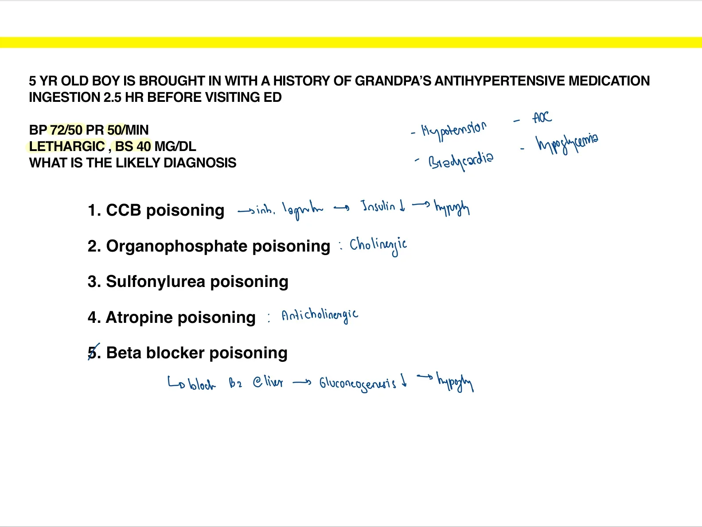
Test tox.pdf, p.4
Source: Old special HTML: A16 | Page/slot: old-special | Marker: A16-0073
Reference: Source: Old special HTML: A16 | Page/slot: old-special | Marker: A16-0073
ซ่อนเฉลยเปิดเฉลยSolution readyA02-0151 answer
Answer
5. Beta blocker poisoning
Rationale
Bradycardia, hypotension, lethargy, and hypoglycemia after an antihypertensive ingestion fit beta-blocker poisoning.
References
- Source note: Source file: Test tox.pdf | Targeted repair from Test tox.pdf page 4. No formal answer key line was present in the source. - Original reference: Reference: Source: Test tox.pdf | p.4
A02-0152A02-Q0152solution_ready
A 45-year-old has a 4 month history of nonfocal, generalized headache. PE: BP170/110 Lab Na146 K2.3 Cl103 HCO3 27 Cr1.2
Plasma renin activity 0.1 and serum aldosterone 65
Which of the following is the most likely cause for his findings?
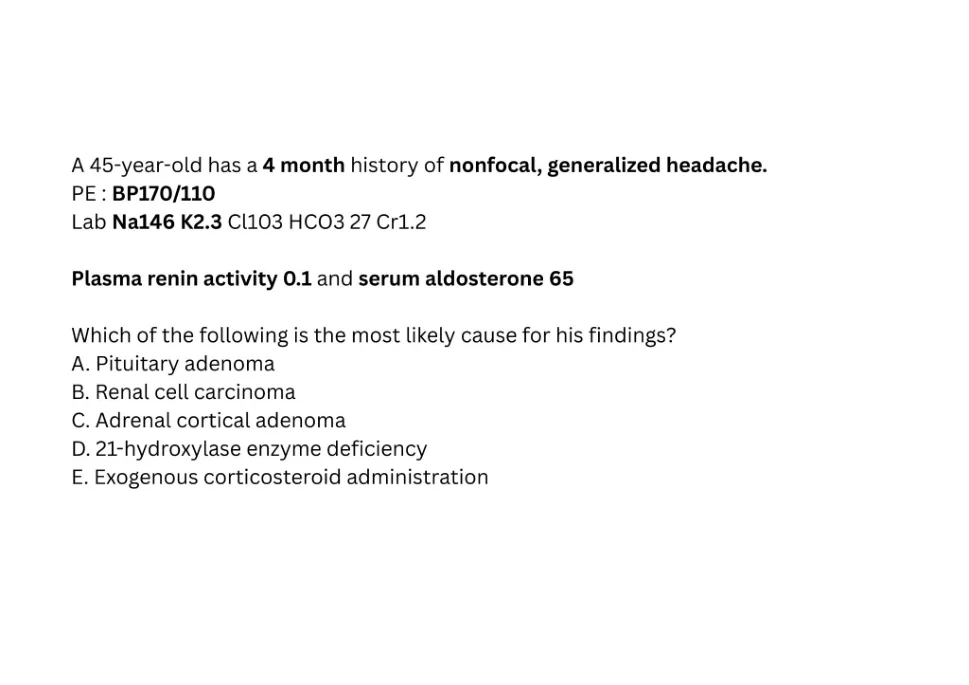
crop
ยังไม่ถูก
A. Pituitary adenoma
ยังไม่ถูก
B. Renal cell carcinoma
ถูกต้อง
High aldosterone with suppressed renin, hypertension and hypokalemia indicates primary hyperaldosteronism from adrenal cortical adenoma.
A 40-year-old male had BP190/95 mmHg with generalized weakness about grade IV of motor power of his limbs. His laboratory investigations was shown: Hb 11.0 g/dL, WBC 9,800 cells/µL, platelet 250,000 cells/µL, glucose 90 mg/dL, BUN 14 mg/dL, Cr 0.8 mg/dL, Na 152 mEq/L, K 3 mEq/L, Cl 100 mEq/L, CO2 30 mEq/L and his spot urine was shown osmolarity 400 mOsm/kg and urine electrolytes: sodium 35 mEq/L, potassium 60 mEq/L, chloride 32 mEq/L. Which of the following is the most appropriate further investigation? A. Renin B. Cortisol C. Aldosterone D. Arterial blood gas E. CT brain with contrast
Progressive dyspnea with loud P2, RV heave, JVP elevation, clear lung fields, and normal V/Q scan is most consistent with pulmonary arterial hypertension.
Progressive dyspnea with loud P2, RV heave, JVP elevation, clear lung fields, and normal V/Q scan is most consistent with pulmonary arterial hypertension.
A02-0155A02-Q0155solution_ready
151. หญิง 40 ปี มาด้วย acute dyspnea and chest pain ไม่ได้ให้ v/s มา ได้ทำ echo เป็นดังภาพ: ให้ภาพ echo septal wall thickness with SAM
crop
ยังไม่ถูก
A. pulmonary embolism
ยังไม่ถูก
B. pulmonary hemorrhage
ยังไม่ถูก
C. cardiac tamponade
ถูกต้อง
Systolic anterior motion of the mitral valve with septal hypertrophy on echo is characteristic of HCM.
Systolic anterior motion of the mitral valve with septal hypertrophy on echo is characteristic of HCM.
A02-0156A02-Q0156solution_ready
Q16. A 53-year-old man presents to the emergency depart ment with chest pain. His blood pressure is 250/170. Due to his severe hypertension and concerning description of the pain, he is immediately started on an antihypertensive medication. Five hours later the admitting team mentions that they are concerned about cyanide toxicity if the patient stays on the med ication too long. Which medication was started?
McGraw Chapter 5: Cardiovascular Disorders, p.46
ยังไม่ถูก
A. Amlodipine
ยังไม่ถูก
B. Esmolol
ยังไม่ถูก
C. Nesiritide
ถูกต้อง
Nitroprusside is an intravenous vasodilator used for severe hypertensive emergencies. Prolonged or high-dose infusion can cause cyanide toxicity, matching the admitting team's concern.
Source: Old special HTML: A16 | Page/slot: old-special | Marker: a16-gas-and-inhalational-q16
Reference: Source: Old special HTML: A16 | Page/slot: old-special | Marker: a16-gas-and-inhalational-q16
ซ่อนเฉลยเปิดเฉลยSolution readyA02-0156 answer
Answer
D. Nitroprusside
Rationale
Nitroprusside is an intravenous vasodilator used for severe hypertensive emergencies. Prolonged or high-dose infusion can cause cyanide toxicity, matching the admitting team's concern.
References
- Source note: Potential toxicology-adjacent McGraw item originally routed to A02. Full source page preserved; answer/rationale added during A02 cross-route review. - Original reference: Reference: Source: McGraw Chapter 5: Cardiovascular Disorders | p.46 | originally routed as A02.
A02-0157A02-Q0157solution_ready
Q11. For which of the following conditions is digoxin contraindicated?
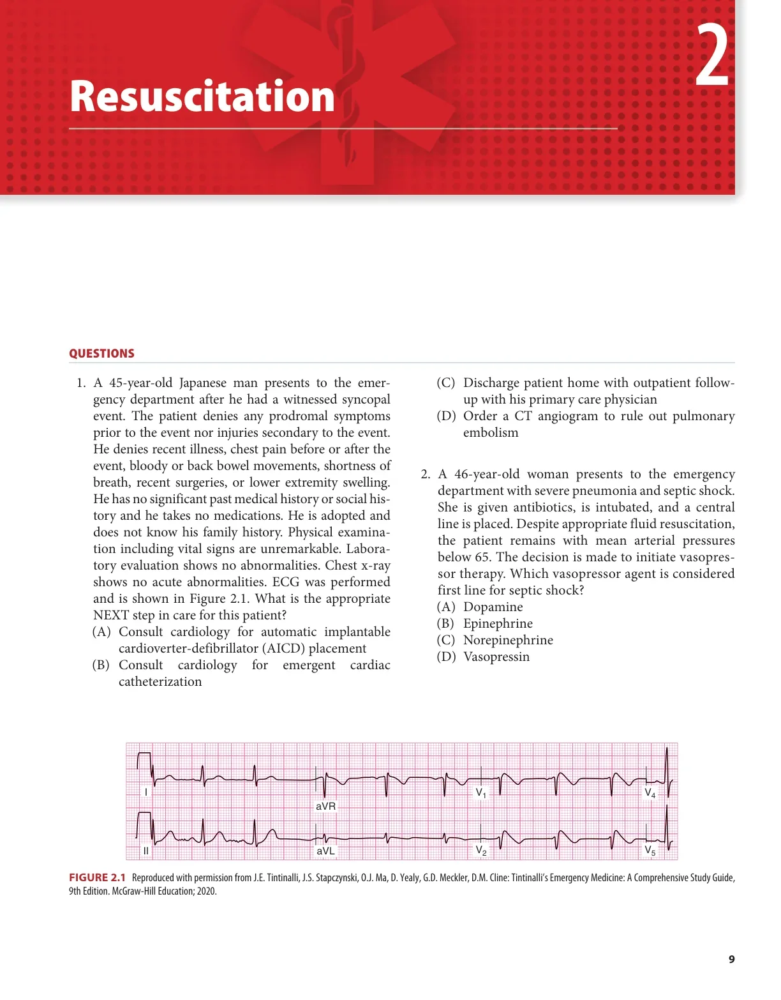
McGraw Chapter 2: Resuscitation, p.20
ยังไม่ถูก
A. Atrial fibrillation
ยังไม่ถูก
B. Atrial flutter
ยังไม่ถูก
C. Congestive heart failure
ถูกต้อง
Digoxin can be used in selected supraventricular rate-control settings, but it is contraindicated in ventricular tachycardia because it can worsen malignant ventricular dysrhythmias.
Source: Old special HTML: A16 | Page/slot: old-special | Marker: a16-medication-and-antidote-q11
Reference: Source: Old special HTML: A16 | Page/slot: old-special | Marker: a16-medication-and-antidote-q11
ซ่อนเฉลยเปิดเฉลยSolution readyA02-0157 answer
Answer
D. Ventricular tachycardia
Rationale
Digoxin can be used in selected supraventricular rate-control settings, but it is contraindicated in ventricular tachycardia because it can worsen malignant ventricular dysrhythmias.
References
- Source note: Potential toxicology-adjacent McGraw item originally routed to B. Full source page preserved; answer/rationale added during A02 cross-route review. - Original reference: Reference: Source: McGraw Chapter 2: Resuscitation | p.20 | originally routed as B.